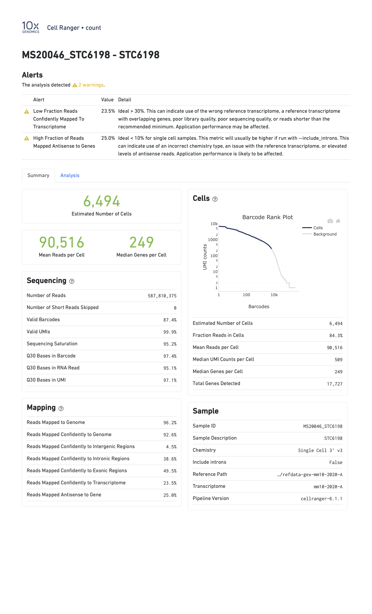
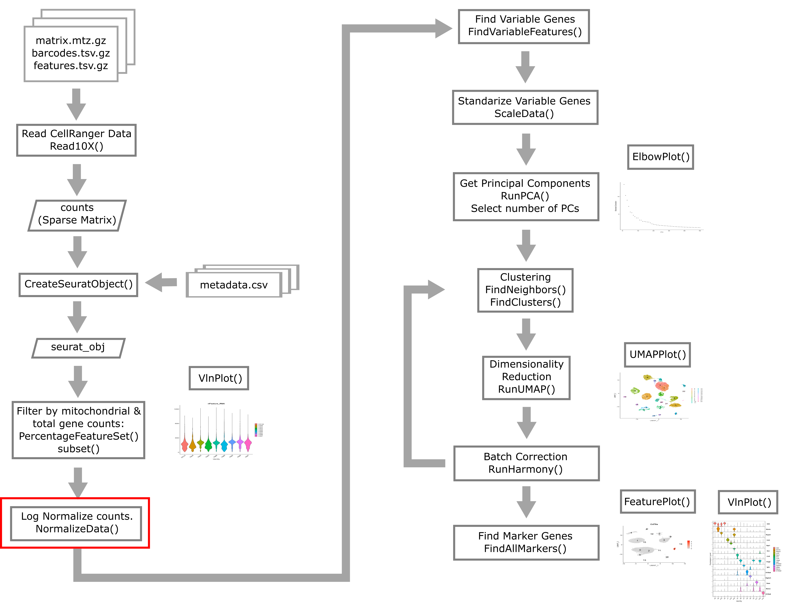
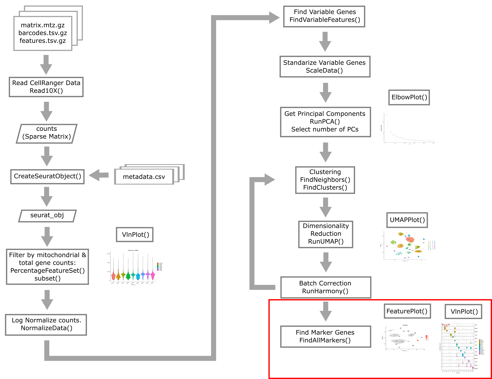
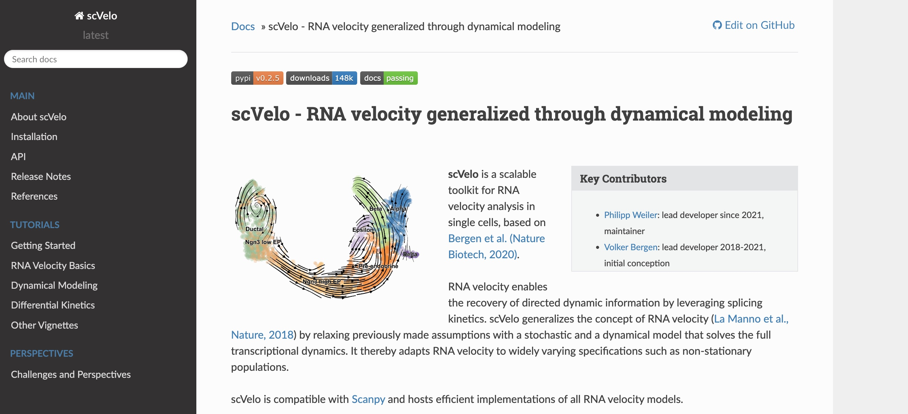
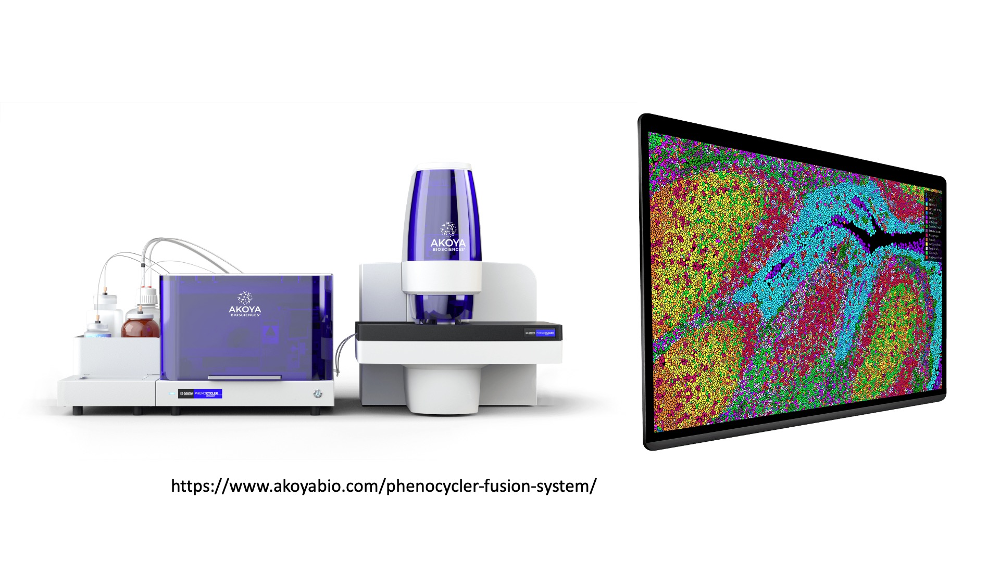

Introduction to Single Cell RNA-seq
Overview
Teaching: 45 min
Exercises: 10 minQuestions
What is single cell RNA-seq?
What is the difference between bulk RNA-seq and single cell RNA-seq?
How do I choose between bulk RNA-seq and single cell RNA-seq
Objectives
Describe the overall experimental process of generating single-cell transcriptomes.
Describe instances where bulk vs. single cell RNA-Seq methods are uniquely appropriate.
Brief overview of single cell transcriptomics technology
Single cell RNA-sequencing (scRNA-Seq) is a method of quantifying transcript expression levels in individual cells. scRNA-Seq technology can take on many different forms and this area of research is rapidly evolving. In 2022, the most widely used systems for performing scRNA-Seq involve separating cells and introducing them into a microfluidic system which performs the chemistry on each cell individually (droplet-based scRNA-Seq).
In this workshop we will primarily focus on the 10X Genomics technology. 10X Genomics is a market leader in the single cell space and was among the first technologies that made it feasible to profile thousands of cells simultaneously. Single cell technology is changing rapidly and it is not clear whether any other companies will be able to successfully challenge 10X’s dominance in this space.
The steps in droplet scRNA-Seq are:
- Cell isolation:
- If the cells are part of a tissue, the cells are disaggregated using collagenase or other reagents. The specifics of this protocol can vary greatly due to differences between tissues that are biological in nature. If the cells are in culture or suspension, they may be used as-is.
- Assess cell viability.
- If scRNA-Seq is being performed on fresh tissue, the cells are usually checked for viability. We want “happy” cells loaded into the machine. We might hope for >90% viable and set a minimum threshold of >70%, although these numbers can vary greatly depending on the experiment.
- Droplet formation inside instrument:
- Using a microfluidic system, each cell is suspended in a nanoliter-size droplet along with a barcoded primer bead. The cells are kept separate from each other in an oil/water emulsion.
- Cell lysis, generating complementary DNA (cDNA):
- The cells are lysed in each droplet. Each cell was already encapsulated with a barcoded primer bead which has a primer specific to that cell. Often a poly-d(T) primer is used to prime the poly(A) tail of mRNA. Complementary DNA is transcribed and correct primers are added for Illumina sequencing.
- Library generation:
- Oil is removed to destroy droplets and homogenize the mixture. cDNA is amplified by PCR. The cDNA is sequenced on any Illumina machine. Sequencing should be paired-end – one read contains cell and molecule barcodes, while the other read contains the target transcript that was captured. We will discuss the sequence files in more detail in a later lesson. Any service provider who generates scRNA-Seq data for you should know how to properly set up in Illumina run to get you the data you need.

What is scRNA-Seq useful for?
Single cell RNA-Seq is a new technology and its uses are limited only by your imagination! A few examples of problems that have been addressed using scRNA-Seq include:
- developmental studies & studies of cellular trajectories.
- detailed tissue atlases.
- characterization of tumor clonality.
- definition of cell-type specific transcriptional responses (e.g. T-cell response to infection)
- profiling of changes in cell state (i.e. homeostasis vs. response state)
- a variety of different types of CRISPR screens
Comparing and contrasting scRNA-Seq with bulk RNA-Seq
Bulk RNA-Seq and single cell RNA-Seq are related in that they both assess transcription levels by sequencing short reads, but these two technologies have a variety of differences. Neither technology is always better. The approach that one might use should depend upon the information one hopes to gather.
Consider the following points when assessing the differences between the technologies and choosing which to utilize for your own experiment:
- Tissues are heterogeneous mixtures of diverse cell types. Bulk RNA-Seq data consists of average measures of transcripts expressed across many different cell types, while scRNA-Seq data is cell-type resolved.
- Bulk RNA-Seq data may not be able to distinguish between changes in gene expression versus changes in tissue cell composition.
- Bulk RNA-Seq allows for much higher sequencing coverage for each gene and often captures more total genes.
- Bulk RNA-Seq allows for better isoform detection due to the higher sequencing depth and relatively uniform coverage across transcripts (vs. a typical 3’ bias in scRNA-Seq).
- Genes without poly-A tail (e.g. some noncoding RNAs) might not be detected in scRNA-Seq, but can be reliably assessed using bulk RNA-Seq.
 https://www.10xgenomics.com/blog/single-cell-rna-seq-an-introductory-overview-and-tools-for-getting-started
https://www.10xgenomics.com/blog/single-cell-rna-seq-an-introductory-overview-and-tools-for-getting-started
Challenge
For each of these scenarios, choose between using bulk RNA-Seq and scRNA-Seq to address your problem.
Differentiation of embryonic stem cells to another cell type
Solution
You would likely find single cell RNA-Seq most powerful in this situation since the cells are differentiating along a continuous transcriptional gradient.
Studying aging with a specific focus on the senescence-involved (e.g. ref) gene Cdkn2a
Solution
Since you are interested in the expression of a single gene (Cdkn2a), bulk RNA-seq may be a better choice because of the greater sequencing depth and the potenial to identify isoforms.
Studying variation in vaccine response by profiling peripheral blood mononuclear cells (PBMCs) –
Solution
Since you are likely interested in gene expression within specific cell types, single cell RNA-seq may be a better choice because you will be able to quantify cell proportions and cell-specific gene expression.
Doing functional genomics in a non-model species
Solution
Non-model organsms may not have a well-developed reference genome or transcript annotation. Thus, you may need to use tools which perform de-novo transcript assembly and then align your reads to that custom transcriptome. De-novo transcript assembly requires greater sequencing depth, which single-cell RNA-Seq may not provide. Therefore we would recommend using bulk RNA-Seq in this situation.
Studying micro RNAs
Solution
MicroRNAs are not currently assayed by most scRNA-Seq technologies. Thus bulk RNA-Seq, with an enrichment for small RNAs, would be the better choice here.
Performing gene expression quantitative trait locus (eQTL) mapping
Solution
You may want good estimates of transcript abundance in your tissue of interest, so bulk RNA-Seq may be a good choice here. However, you may be able to aggregate scRNA-Seq expression for each cell type and perform eQTL mapping. Therefore both technologies could be informative!
Single cell data modalities
There are several different modalities by which one can gather data on the molecular properties of single cells. 10X Genomics currently offers the following reliable assays:
- RNA-seq - assess gene expression in single cells. A sub-group of single cell gene expression is single nucleus gene expression, which is often used on frozen samples or for tissues where preparing a single cell suspension is difficult or impossible (e.g. brain).
- ATAC-seq - assess chromatin accessibility in single cells
- “Multiome” - RNA + ATAC in the same single cells
- Immune repertoire profiling - assess clonality and antigen specificity of adaptive immune cells (B and T cells)
- CITE-Seq - assess cell surface protein levels
- Spatial transcriptomics/proteomics - assess gene expression and/or protein abundance with near-single cell resolution
Focus of this course: 10X Genomics mouse scRNA-Seq
While there are several commercially available scRNA-seq technologies, this course will focus on data generated by the 10X Genomics platform. This technology is widely used at JAX, and it is flexible, reliable, and relatively cost-efficient. We will focus on a mouse data set, although most of the techniques that you will learn in this workshop apply equally well to other species. Each data modality has its own strengths and weaknesses; in this course we will focus on transcriptomics.
Brief overview of instrumentation and library preparation choices available from 10X Genomics
10X Genomics offers a variety of options for profiling single cells. Here we give a brief overview of some of their offerings to illustrate what is available.
To profile gene expression, users can choose from several options:
- 3’ gene expression – the “usual” option, amplifies from the 3’ end of transcripts
- 5’ gene expression – another option for profiling gene expression that captures from the 5’ end of the transcript. See this link for some information on 3’ vs 5’ gene expression
- “targeted” gene expression – focus on a smaller number of genes that are of particular interest – NOTE: product discontinued in 2023
One can also choose to profile gene expression on different instruments. The “workhorse” 10X Chromium machine is used for profiling gene expression of up to eight samples totaling 25k-100k cells. The newer Chromium X is a higher throughput instrument which can profile up to 16 samples and up to one million cells. There are also variations in the kits that can be purchased to perform library preparation. In general 10X Genomics does a fairly good job of continuously improving the chemistry such that the data quality continues to improve. More information is available from 10X Genomics.
10X Genomics also produces a suite of other instrumentation for applications such as spatial transcriptomics (Visium) or in situ profiling (Xenium), which we will not cover in this course.
Key Points
Single cell methods excel in defining cellular heterogeneity and profiling cells differentiating along a trajectory.
Single cell RNA-Seq data is sparse and cannot be analyzed using standard bulk RNA-Seq approaches.
Bulk transcriptomics provides a more in-depth portrait of tissue gene expression, but scRNA-Seq allows you to distinguish between changes in cell composition vs gene expression.
Different experimental questions can be investigated using different single-cell sequencing modalities.
Experimental Considerations
Overview
Teaching: 45 min
Exercises: 5 minQuestions
How do I design a rigorous and reproducible single cell RNAseq experiment?
Objectives
Understand the importance of biological replication for rigor and reproducibility.
Understand how one could pool biological specimens for scRNA-Seq.
Understand why confounding experimental batch with the variable of interest makes it impossible to disentangle the two.
Understand the different data modalities in single-cell sequencing and be able to select a modality to answer an experimental question.
In this lesson we will discuss several key factors you should keep in mind when designing and executing your single cell study. Single cell transcriptomics is in many ways more customizable than bulk transcriptomics. This can be an advantage but can also complicate study design.
To begin, we note that you should be aware of the distinction between cells loaded vs cells captured. In a 10X scRNA-Seq study you prepare a cell suspension and decide how many cells should be loaded onto the 10X Chromium instrument. The cells flow through the microfluidics into oil-water emulsion droplets, but not all cells are captured. Typically somewhere between 50-70% of cells are captured. 10X provides estimates for the capture rates of samples profiled using their 3’ gene expression kit here.
Doublets/multiplets - a ubiquitous property of droplet single cell assays
In droplet single cell transcriptomics, a key reason the technology “works” is because most droplets contain at most one cell. After all, if droplets contained more than one cell the technology would no longer be profiling single cells! However, due to the nature of the cell loading of droplets (which can be modeled accurately using Poisson statistics), even in a perfect experiment it is inevitable that some droplets will contain more than one cell. These are called multiplets – or doublets, since the vast majority of multiple-cell droplets contain two cells. Contrast with singlets, which contain only one cell.
There are two considerations we might keep in mind when thinking about singlets vs. doublets. First, not every droplet contains exactly one gel bead. The initial paper describing the 10X technology, published in 2017, showed the following histogram:
Therefore the large majority of droplets contain zero or one gel beads. This is good. If a droplet contained, say, two gel beads, then even if a single cell was captured in that droplet it would appear to be two cells because the transcripts from that cell would be tagged with one of two cell barcodes.
The second consideration we might keep in mind when thinking about singlets vs. doublets is that it can be hard to obtain a ground truth. If, say, two cells of the same cell type were captured in a single droplet, how would we know there were two? It might be easier if two cells of very different cell types were together, since those cells would likely express very different genes. One way we can look for doublets is to run a so-called “barnyard” experiment where we mix cells from multiple species. For example, Sathyamurthy et al. 2018 link used single nucleus transcriptomics to explore the cellular heterogeneity of the mouse spinal cord. They loaded mouse and human cells together and showed that only a small number of droplets appeared to contain both a human and a mouse cell.

It is important to realize that the doublet rate is not fixed but rather depends on the number of cells loaded into the 10X Chromium machine. The more cells are loaded, the higher the doublet rate. The figure below shows the relationship between the number of cells loaded and the doublet rate. This figure is derived from the 10X User Guide for their Chromium Next GEM Single Cell 3ʹ Reagent Kits v3.1 product, but the basic trends should hold across other versions of this product as well.
In a future lesson we will discuss software options for trying to identify and remove doublets prior to drawing biological conclusions from data. Unfortunately this process is not always straightforward and we are usually forced to accept the reality that we likely cannot remove all doublets from our data.
How to decide on the parameters of the experiment
There are a number of parameters in a typical scRNA-Seq experiment that are customizable according to the particular details of each study.
Number of cells
A typical number of captured cells (target cell number) would be 6,000-8,000 cells on a standard 10X Chromium, or 16,000-20,000 cells on the higher throughput Chromium X. At these cell capture numbers, the doublet rates are expected to stay relatively low (the JAX Single Cell Biology Laboratory estimates empirical doublet rates of 0.9% and 0.4% per 1,000 cells for Chromium and Chromium X, respectively). At these doublet rates we would expect to obtain less than 100 doublets in standard experiments. One may also choose to “overload” or “super load” the Chromium instrument. In this strategy we load more than the typical number of cells, they flow through the instrument more quickly than usual, and more droplets end up with multiple cells. Therefore our data contains more multiplets; however we also obtain more total cells. If we are in a setting where we can tolerate a higher doublet rate this may be an efficient way of profiling more cells.
Sequencing depth
There is no fixed rule for how deeply we should sequence in our scRNA-Seq experiment. Moreover, the depth of sequencing will vary significantly between cells no matter what we choose.
Nevertheless, a reasonable rule of thumb would be to sequence to a depth of approximately 50,000 - 75,000 reads per cell. If we are profiling cells that have relatively few genes expressed, such as lymphocytes, we might target a sequencing depth closer to 25,000 - 50,000 reads per cell. If we are profiling cells that express many genes, such as stem cells, we might go significantly higher, to 100,000 or even 200,000 reads per cell.
Number of samples
It is generally more economical to run at least a few scRNA-Seq samples than to run just one or two. For example, JAX’s Single Cell Biology Laboratory gives a substantial per-library discount for running 3+ samples as opposed to one or two samples. This is because the chip used to run samples through Chromium has 8 (or 16) channels which cannot be reused.
The most efficient way to organize your experiment is to design it to be run in batches of 8.
Biological replication
Proper biological replication is the cornerstone of a statistically well-powered experiment. This is recognized across nearly all of biology. In the early days of single cell RNA-Seq, the main focus of many investigations was demonstrating the technology and often biological replication was missing. As scRNA-Seq has matured, it has become increasingly important to include biological replication in order to have confidence that our findings are statistically robust.
Note that the tens of thousands of cells sequenced in a typical sample do not constitute biological replication. In order to show a biologically meaningful change in cell composition, the emergence of a particular cell subset, or difference in gene expression we need samples harvested from multiple individuals.

In a strict sense, biological replication would entail independently rearing multiple genetically identical animals, subjecting them to identical conditions, and harvesting cells in an identical manner. This is one strength of working in the mouse that we can leverage at JAX. However, there are also instances where we can obtain useful biological replication without meeting these strict requirements. For example, a disease study in humans may profile single cells collected from affected and unaffected individuals, and could provide insights as long as the groups are not systematically different. Turning to the mouse, a fine-grained time course may not require biological replication at every time point because – depending on the questions investigators wish to ask – cells from different individual mice collected at different time points might be analyzed together to attain robust results.
How many biological replicates should one collect? This question is difficult to answer with a “one size fits all” approach but we recommend an absolute minimum of three biological replicates per experimental group. More is almost always better, but there are obviously trade offs with respect to budget and the time it takes to harvest samples. There are many studies that have attempted to model the power of single cell RNA-Seq experiments, including differential gene expression and differences in cell composition. We will not discuss these studies in detail in this course, but some may be useful for your own work:
- Schmid et al. 2021. scPower accelerates and optimizes the design of multi-sample single cell transcriptomic studies. https://doi.org/10.1038/s41467-021-26779-7
- Svensson et al. 2017. Power analysis of single-cell RNA-sequencing experiments. https://doi.org/10.1038/nmeth.4220
- Davis et al. 2019. SCOPIT: sample size calculations for single-cell sequencing experiments. https://doi.org/10.1186/s12859-019-3167-9
- Zimmerman et al. 2021. Hierarchicell: an R-package for estimating power for tests of differential expression with single-cell data. https://doi.org/10.1186%2Fs12864-021-07635-w
- Vieth et al. 2017. powsimR: power analysis for bulk and single cell RNA-seq experiments. https://doi.org/10.1093/bioinformatics/btx435j
- Su et al. 2020. Simulation, power evaluation and sample size recommendation for single-cell RNA-seq. https://doi.org/10.1093/bioinformatics/btaa607
Pooling options
Given the relatively high expense of each scRNA-Seq sample and the importance of proper biological replication laid out above, the opportunity to pool samples and run them together is a powerful tool in the single cell researcher’s toolkit. In pooled single cell genomics, there are two primary methods of tracking the sample to which each individual cell belongs. First, one can attach a unique barcode (“hashtag”) to all cells of each sample, typically using an oligonucleotide-tagged antibody to a ubiquitous cell surface protein or an alternative (e.g. lipid-reactive) reagent.

(Figure from Smibert et al. 2018) This approach was pioneered by Smibert et al. The hashtag is read out in a dedicated library processing step and used to demultiplex samples based on knowledge of the pre-pooling barcoding strategy. This is the basis of the techniques known as “cell hashing”, “lipid hashing”, and the recently introduced 10X Genomics CellPlex multiplexing system. The hashtagging approach is accurate, however it is important to note that the extra experimental steps may impose obstacles. Hashtagged multiplexing requires extra sample preparation steps for barcoding, which can affect the viability and quality of cell preparations, may be less effective for certain tissues and cell types, and the increased sample handling may itself impose a significant burden in large projects.
A second, alternative, approach is to use natural genetic variation as a built-in barcode and demultiplex cells using SNVs and indels unique to each sample.
This approach was pioneered by Kang et al.. In contrast to the hashtagging approach, genetic demultiplexing requires no special reagents or additional steps, and can be used for any tissue or cell type. However, the genetic demultiplexing approach requires that the samples being pooled are sufficiently genetically distinct for them to be distinguishable using transcribed genetic variation. This condition is typically met in human studies or in studies of genetically diverse mice. Of course, this approach would not suffice for a study of a single inbred mouse strain profiled under multiple conditions. One advantage of genetic demultiplexing is that we can use the genetic information to filter out any mixed background doublets, allowing us to obtain data that contains fewer doublets than we would otherwise expect.
Avoid Confounding Batch with Experimental Variables
When designing an experiment, it is tempting to lay samples out in some order that is easy to remember. If you are performing a dose-response experiment, you might order your samples from the lowest dose to the highest dose. If you are assaying transcript levels in different tissues, you might sort the samples by tissue. However, if you maintain this order, you risk confounding single cell batches with your experimental batches. This is called “confounding” and it makes it impossible to statistically disentangle the batch effect from your experimental question.
Let’s look at an example, illustrated in the figure below. Suppose that you have analyzed cells from control and treated mice, which you keep in separate cages, as shown in the left panel below. At euthanasia, you might isolate cells from the mice in each cage sequentially. If you isolate cells from the control mice first, then those cells will sit longer than the treated cells before being delivered to the single cell core. Also, you might place the control cells in the first set of tubes and the treated cells in the last set of tubes. When you deliver your tubes to the core, they may be placed on the 10X instrument in the same order. This will confound holding time and instrument channel with the control and treated groups. A better design is shown in the right panel, in which treatment is not confounded with time and chip channel.

Recommended Reading
Luecken MD, Theis FJ (2019) Current best practices in single-cell RNA-seq analysis: a tutorial. Mol Syst Biol link
Andrews TS, Kiselev VY, McCarthy D, Hemberg M (2021) Tutorial: guidelines for the computational analysis of single-cell RNA sequencing data. Nat Protoc link
Key Points
Due to the high variance in single-cell data sets, a well-powered study with adequate biological replication is essential for rigor & reproducibility.
Increasing the number of cells also increases the multiplet rate.
Pooling cells using hashtagging is a useful way to reduce costs, but also stresses cells and may affect cell viability.
Pooling cells from genetically diverse individuals may allow cells to be demultiplexed using genetic variants that differ between samples.
Do not confound experimental batch with any technical aspect of the experiment, i.e. sample pooling or flow cell assignment.
Overview of scRNA-seq Data
Overview
Teaching: 90 min
Exercises: 30 minQuestions
What does single cell RNA-Seq data look like?
Objectives
Understand the types of files provided by CellRanger.
Understand the structure of files provided by CellRanger.
Describe a sparse matrix and explain why it is useful.
Read in a count matrix using Seurat.
Overview of Single Cell Analysis Process

Open Project File
In the Setup section of this workshop, you created an RStudio Project. Open this project now, by:
- selecting File –> Open Project… from the Menu
- choosing “scRNA.Rproj”
- opening the project file.
What do raw scRNA-Seq data look like?
The raw data for an scRNA-Seq experiment typically consists of two FASTQ files. One file contains the sequences of the cell barcode and molecular barcode (UMI), while the other file contains the sequences derived from the transcript. The reads in file one are approximately 28bp long (16bp cell barcode, 12bp UMI), while the reads in file two are approximately 90bp long.
The Single Cell Biology Laboratory at JAX additionally provides output of running the 10X CellRanger pipeline (see below).
Typical pre-processing pipeline
10X CellRanger
10X CellRanger is “a set of analysis pipelines that process Chromium single cell data to align reads, generate feature-barcode matrices” and perform various other downstream analyses. In this course we will work with data that has been preprocessed using CellRanger. All you need to remember is that we used CellRanger to obtain gene expression counts for each gene within each cell.
CellRanger alternatives
There are several alternatives to CellRanger. Each of these alternatives has appealing properties that we encourage you to read about but do not have the time to discuss in this course. Alternatives include:
alevinSrivastava et al. 2019, from the developers of thesalmonalignerkallisto | bustoolsMelsted et al. 2021, from the developers of thekallistoalignerSTARsoloKaminow et al 2021, from the developers of theSTARaligner
While you should be aware that these alternatives exist and in some cases there may be very compelling reasons to use them, broadly speaking CellRanger is the most widely used tool for processing 10X Chromium scRNA-Seq data.
Introduction to two major single cell analysis ecosystems:
At the time that this workshop was created, there were many different software packages designed for analyzing scRNA-seq data in a variety of scenarios. The two scRNA-seq software “ecosystems” that were most widely in use were:
- R/Seurat : The Seurat ecosystem is the tool of choice for this workshop. The
biggest strength of Seurat is its straightforward vignettes and ease of
visualization/exploration.
- Seurat was released in 2015 by the Regev lab.
- The first author, Rahul Satija, now has a faculty position and has maintained and improved Seurat.
- Currently at version 4.
- Source code available on Github.
- Each version of Seurat adds new functionality:
- Seurat v1: Infers cellular localization by integrating scRNA-seq with in situ hybridization.
- Seurat v2: Integrates multiple scRNA-seq data sets using shared correlation structure.
- Seurat v3: Integrates data from multiple technologies, i.e. scRNA-seq, scATAC-seq, proteomics, in situ hybridization.
- Seurat v4: Integrative multimodal analysis and mapping of user data sets to cell identity reference database.
- Python/scanpy and anndata
- Scanpy is a python toolkit for analyzing single-cell gene expression data.
- Scanpy is built jointly with anndata, which is a file format specification and accompanying API for efficiently storing and accessing single cell data.
- Like Seurat, scanpy is under active development as well. Scanpy has an advantage of being a somewhat larger and more diverse community than Seurat, where developement is centered around a single lab group.
- This software has been used in a very large number of single cell projects. We encourage you to check it out and consider using it for your own work.
For this course we will not use scanpy because we view R/Seurat as having a slight edge over scanpy when it comes to visualization and interactive exploration of single cell data.
Reading in CellRanger Data

As described above, CellRanger is software which preprocesses Chromium single cell data to align reads, generate feature-bar code matrices, and perform other downstream analyses. We will not be using any of CellRanger’s downstream analyses, but we will be using the feature-barcode matrix produced by CellRanger. A feature-barcode matrix – in the context of scRNA-Seq – is a matrix that gives gene expression counts for each gene in each single cell. In a feature-barcode matrix, the genes (rows) are the features, and the cells (columns) are each identified by a barcode. The name feature-barcode matrix is a generalized term for the gene expression matrix. For example, feature-barcode could also refer to a matrix of single cell protein expression or single cell chromatin accessibility. In this workshop, we will read in the feature-barcode matrix produced by CellRanger and will perform the downstream analysis using Seurat.
Liver Atlas
Cell Ranger Files
In this lesson, we will read in a subset of data from the Liver Atlas, which is described in their Cell paper. Briefly, the authors performed scRNASeq on liver cells from mice and humans, identified cell types, clustered them, and made the data publicly available. We will be working with a subset of the mouse liver data. We split the data into two sets, one to use in the lesson and one for you to work with independently as a challenge.
Before the workshop, you should have downloaded the data from
Box and placed it in your data directory.
Go to the Setup page for instructions on how to download the data
files.
Open a file browser and look in the data subdirectory mouseStSt_invivo and
you should see three files. Each file ends with ‘gz’, which indicates that it
has been compressed (or ‘zipped’) using
gzip. You don’t need to unzip them;
the software that we use will uncompress the files as it reads them in. The
files are:
- matrix.mtx.gz: The feature-barcode matrix, i.e. a two-dimensional
matrix containing the counts for each gene in each cell.
- Genes are in rows and cells are in columns.
- This file is in a special sparse matrix format which reduces disk space and memory usage.
- barcodes.tsv.gz: DNA barcodes for each cell. Used as column names in counts matrix.
- features.tsv.gz: Gene symbols for each gene. Used as row names in counts matrix.

Challenge 1
1). R has a function called file.size. Look at the help for this function and get the size of each of the files in the
mouseStSt_invivodirectory. Which one is the largest?Solution to Challenge 1
1).
file.size(file.path(data_dir, 'mouseStSt_invivo', 'barcodes.tsv.gz'))
584346 bytes
file.size(file.path(data_dir, 'mouseStSt_invivo', 'features.tsv.gz'))
113733 bytes
file.size(file.path(data_dir, 'mouseStSt_invivo', 'matrix.mtx.gz'))
603248953 bytes
‘matrix.mtx.gz’ is the largest file.
CellRanger Quality Control Report
CellRanger also produces a Quality Control (QC) report as an HTML document. It produces one report for each sample we run (each channel of the 10X chip). We do not have the QC report from the Liver Atlas study, but the figure below shows an example report. The report highlights three numbers:
- Estimated Number of Cells: This indicates the number of cells recovered in your experiment. As we previously discussed this will be less than the number of cells you loaded. The number of cells recovered will almost never be the exact number of cells you had hoped to recover, but we might like to see a number within approximately +/-20% of your goal.
- Mean Reads per Cell: This indicates the number of reads in each cell. This will be a function of how deeply you choose to sequence your library.
- Median Genes per Cell: This indicates the median number of genes detected in each cell. Note that this is much lower than in bulk RNA-Seq. This number will also be lower for single nucleus than for single cell RNA-Seq, and is also likely to vary between cell types.

When you run a sample that has a problem of some kind, the CellRanger report might be able to detect something anomalous about your data and present you with a warning. Here are two examples of reports with warning flags highlighted.
In the report below, CellRanger notes that a low fraction of reads are within cells. This might be caused by, for example, very high levels of ambient RNA.

In the report below, CellRanger notes that a low fraction of reads are confidently mapped to the transcriptome, and a high fraction of reads map antisense to genes. Note that in this sample we are seeing only 249 genes per cell despite a mean of over 90,000 reads per cell. This likely indicates a poor quality library.

Reading a CellRanger Gene Expression Count Matrix using Seurat
In order to read these files into memory, we will use the Seurat::Read10X() function. This function searches for the three files mentioned above in the directory that you pass in. Once it verifies that all three files are present, it reads them in to create a counts matrix with genes in rows and cells in columns.
library(Seurat)
data_dir <- 'data'
We will use the gene.column = 1 argument to tell Seurat to use the first
column in ‘features.tsv.gz’ as the gene identifier.
Run the following command. This may take up to three minutes to complete.
# uses the Seurat function Read10X()
counts <- Read10X(file.path(data_dir, 'mouseStSt_invivo'), gene.column = 1)
counts now contains the sequencing read counts for each gene and cell.
How many rows and columns are there in counts?
dim(counts)
[1] 31053 47743
In the counts matrix, genes are in rows and cells are in columns. Let’s look
at the first few gene names.
head(rownames(counts), n = 10)
[1] "Xkr4" "Gm1992" "Gm37381" "Rp1" "Sox17" "Gm37323" "Mrpl15"
[8] "Lypla1" "Gm37988" "Tcea1"
As you can see, the gene names are gene symbols. There is some risk that these may not be unique. Let’s check whether any of the gene symbols are duplicated. We will sum the number of duplicated gene symbols.
sum(duplicated(rownames(counts)))
[1] 0
The sum equals zero, so there are no duplicated gene symbols, which is good. As it turns out, the reference genome/annotation files that are prepared for use by CellRanger have already been filtered to ensure no duplicated gene symbols.
Let’s look at the cell identifiers in the column names.
head(colnames(counts), n = 10)
[1] "AAACGAATCCACTTCG-2" "AAAGGTACAGGAAGTC-2" "AACTTCTGTCATGGCC-2"
[4] "AATGGCTCAACGGTAG-2" "ACACTGAAGTGCAGGT-2" "ACCACAACAGTCTCTC-2"
[7] "ACGATGTAGTGGTTCT-2" "ACGCACGCACTAACCA-2" "ACTGCAATCAACTCTT-2"
[10] "ACTGCAATCGTCACCT-2"
Each of these barcodes identifies one cell. They should all be unique. Once again, let’s verify this.
sum(duplicated(colnames(counts)))
[1] 0
The sum of duplicated values equals zero, so all of the barcodes are unique. The barcode sequence is the actual sequence of the oligonucleotide tag that was attached to the GEM (barcoded bead) that went into each droplet. In early versions of 10X technology there were approximately 750,000 barcodes per run while in the current chemistry there are >3 million barcodes. CellRanger attempts to correct sequencing errors in the barcodes and uses a “whitelist” of known barcodes (in the 10X chemistry) to help.
Next, let’s look at the values in counts.
counts[1:10, 1:20]
10 x 20 sparse Matrix of class "dgCMatrix"
[[ suppressing 20 column names 'AAACGAATCCACTTCG-2', 'AAAGGTACAGGAAGTC-2', 'AACTTCTGTCATGGCC-2' ... ]]
Xkr4 . . . . . . . . . . . . . . . . . . . .
Gm1992 . . . . . . . . . . . . . . . . . . . .
Gm37381 . . . . . . . . . . . . . . . . . . . .
Rp1 . . . . . . . . . . . . . . . . . . . .
Sox17 . . 2 4 . . . 1 . 1 1 . . 2 . . 1 8 1 .
Gm37323 . . . . . . . . . . . . . . . . . . . .
Mrpl15 . . . 1 1 . . . 1 . 2 . . . . 1 . 1 1 .
Lypla1 . . 2 1 . 1 1 . . . 1 1 2 . 1 1 1 . . .
Gm37988 . . . . . . . . . . . . . . . . . . . .
Tcea1 . . 2 . 2 2 . . 1 2 . 2 2 . . 2 1 1 2 .
We can see the gene symbols in rows along the left. The barcodes are not shown to make the values easier to read. Each of the periods represents a zero. The ‘1’ values represent a single read for a gene in one cell.
Although counts looks like a matrix and you can use many matrix functions on
it, counts is actually a different type of object. In scRNASeq, the read
depth in each cell is quite low. So you many only get counts for a small number
of genes in each cell. The counts matrix has 31053 rows and
47743 columns, and includes 1.4825634 × 109
entries. However, most of these entries
(92.4930544%) are
zeros because every gene is not detected in every cell. It would be wasteful
to store all of these zeros in memory. It would also make it difficult to
store all of the data in memory. So counts is a ‘sparse matrix’, which only
stores the positions of non-zero values in memory.
Look at the structure of the counts matrix using str.
str(counts)
Formal class 'dgCMatrix' [package "Matrix"] with 6 slots
..@ i : int [1:111295227] 15 19 36 38 40 61 66 67 70 93 ...
..@ p : int [1:47744] 0 3264 6449 9729 13446 16990 20054 23142 26419 29563 ...
..@ Dim : int [1:2] 31053 47743
..@ Dimnames:List of 2
.. ..$ : chr [1:31053] "Xkr4" "Gm1992" "Gm37381" "Rp1" ...
.. ..$ : chr [1:47743] "AAACGAATCCACTTCG-2" "AAAGGTACAGGAAGTC-2" "AACTTCTGTCATGGCC-2" "AATGGCTCAACGGTAG-2" ...
..@ x : num [1:111295227] 1 1 1 2 1 6 1 1 2 1 ...
..@ factors : list()
We can see that the formal class name is a “dgCMatrix”. There are two long vectors of integers which encode the positions of non-zero values. The gene names and cell barcodes are stored in character vectors and the non-zero values are an integer vector. This class saves space by not allocating memory to store all of the zero values.
Let’s look at small portion of counts. We will create a tile plot indicating
which values are non-zero for the first 100 cells and genes in rows 400 to 600.
For historical reasons, R plots the rows along the X-axis and columns along the
Y-axis. We will transpose the matrix so that genes are on the Y-axis, which
reflects the way in which we normally look at this matrix.
image(1:100, 400:600, t(as.matrix(counts[400:600,1:100]) > 0),
xlab = 'Cells', ylab = 'Genes')
plot of chunk counts_image
In the tile plot above, each row represents one gene and each column represents one cell. Red indicates non-zero values and yellow indicates zero values. As you can see, most of the matrix consists of zeros (yellow tiles) and hence is called ‘sparse’. You can also see that some genes are expressed in most cells, indicated by the horizontal red lines, and that some genes are expressed in very few cells.
What proportion of genes have zero counts in all samples?
gene_sums <- data.frame(gene_id = rownames(counts),
sums = Matrix::rowSums(counts))
sum(gene_sums$sums == 0)
[1] 7322
We can see that 7322 (24%) genes have no reads at all associated with them. In the next lesson, we will remove genes that have no counts in any cells.
Next, let’s look at the number of counts in each cell.
hist(Matrix::colSums(counts))

plot of chunk cell_counts
Matrix::colSums(counts) %>%
enframe() %>%
ggplot(aes(value)) +
geom_histogram(bins = 30) +
scale_x_log10() +
theme_bw(base_size = 16)

plot of chunk cell_counts
The range of counts covers several orders of magnitude, from 500 to 3.32592 × 105. We will need to normalize for this large difference in sequencing depth, which we will cover in the next lesson.
Sample Metadata
Sample metadata refers to information about your samples that is not the “data”, i.e. the gene counts. This might include information such as sex, tissue, or treatment. In the case of the liver atlas data, the authors provided a metadata file for their samples.
The sample metadata file is a comma-separated variable (CSV) file, We will read it in using the readr read_csv function.
metadata <- read_csv(file.path(data_dir, 'mouseStSt_invivo', 'annot_metadata_first.csv'))
Rows: 47743 Columns: 4
── Column specification ───────────────────────────────────────────────────────────────────────────────────────────────
Delimiter: ","
chr (4): sample, cell, digest, typeSample
ℹ Use `spec()` to retrieve the full column specification for this data.
ℹ Specify the column types or set `show_col_types = FALSE` to quiet this message.
Let’s look at the top of the metadata.
head(metadata)
# A tibble: 6 × 4
sample cell digest typeSample
<chr> <chr> <chr> <chr>
1 CS48 AAACGAATCCACTTCG-2 inVivo scRnaSeq
2 CS48 AAAGGTACAGGAAGTC-2 inVivo scRnaSeq
3 CS48 AACTTCTGTCATGGCC-2 inVivo scRnaSeq
4 CS48 AATGGCTCAACGGTAG-2 inVivo scRnaSeq
5 CS48 ACACTGAAGTGCAGGT-2 inVivo scRnaSeq
6 CS48 ACCACAACAGTCTCTC-2 inVivo scRnaSeq
In the table above, you can see that there are four columns:
- sample: mouse identifier from which cell was derived;
- cell: the DNA bar code used to identify the cell;
- digest: cells for this liver atlas were harvested using either an in vivo or an ex vivo procedure. In this subset of the data we are looking only at in vivo samples;
- typeSample: the type of library preparation protocol, either single cell RNA-seq (scRnaSeq) or nuclear sequencing (nucSeq). In this subset of the data we are looking only at scRnaSeq samples.
Let’s confirm that we are only looking at scRnaSeq samples from in vivo digest cells:
dplyr::count(metadata, digest, typeSample)
# A tibble: 1 × 3
digest typeSample n
<chr> <chr> <int>
1 inVivo scRnaSeq 47743
We’re going to explore the data further using a series of Challenges. You will be asked to look at the contents of some of the columns to see how the data are distributed.
Challenge 2
How many mice were used to produce this data? The “sample” column contains the mouse identifier for each cell.
Solution to Challenge 2
count(metadata, sample) %>% summarize(total = n())
Challenge 3
How many cells are there from each mouse?
Solution to Challenge 3
count(metadata, sample)
In this workshop, we will attempt to reproduce some of the results of the Liver Atlas using Seurat. We will analyze the in-vivo single cell RNA-Seq together.
Save Data for Next Lesson
We will use the in-vivo data in the next lesson. If you plan to keep your RStudio open, we will simply continue to the next lesson. If you wanted to save the data you could execute a command like:
save(counts, metadata, file = file.path(data_dir, 'lesson03.Rdata'))
Challenge 5
In the lesson above, you read in the scRNASeq data. There is another dataset which was created using an ex vivo digest in the
mouseStSt_exvivodirectory. Delete thecountsandmetadataobjects from your environment. Then read in the counts and metadata from themouseStSt_exvivodirectory and save them to a file called ‘lesson03_challenge.Rdata’.Solution to Challenge 5
# Remove exising counts and metadata.
rm(counts, metadata)# Read in new counts.
counts <- Seurat::Read10X(file.path(data_dir, 'mouseStSt_exvivo'), gene.column = 1)
# Read in new metadata.
metadata <- read_csv(file.path(data_dir, 'mouseStSt_exvivo', 'annot_metadata.csv'))
# Save data for next lesson.
save(counts, metadata, file = file.path(data_dir, 'lesson03_challenge.Rdata'))
Session Info
sessionInfo()
R version 4.4.1 (2024-06-14)
Platform: x86_64-apple-darwin20
Running under: macOS 15.0.1
Matrix products: default
BLAS: /Library/Frameworks/R.framework/Versions/4.4-x86_64/Resources/lib/libRblas.0.dylib
LAPACK: /Library/Frameworks/R.framework/Versions/4.4-x86_64/Resources/lib/libRlapack.dylib; LAPACK version 3.12.0
locale:
[1] en_US.UTF-8/en_US.UTF-8/en_US.UTF-8/C/en_US.UTF-8/en_US.UTF-8
time zone: America/New_York
tzcode source: internal
attached base packages:
[1] stats graphics grDevices utils datasets methods base
other attached packages:
[1] Seurat_5.1.0 SeuratObject_5.0.2 sp_2.1-4 lubridate_1.9.3
[5] forcats_1.0.0 stringr_1.5.1 dplyr_1.1.4 purrr_1.0.2
[9] readr_2.1.5 tidyr_1.3.1 tibble_3.2.1 ggplot2_3.5.1
[13] tidyverse_2.0.0 knitr_1.48
loaded via a namespace (and not attached):
[1] deldir_2.0-4 pbapply_1.7-2 gridExtra_2.3
[4] rlang_1.1.4 magrittr_2.0.3 RcppAnnoy_0.0.22
[7] spatstat.geom_3.3-3 matrixStats_1.4.1 ggridges_0.5.6
[10] compiler_4.4.1 png_0.1-8 vctrs_0.6.5
[13] reshape2_1.4.4 crayon_1.5.3 pkgconfig_2.0.3
[16] fastmap_1.2.0 labeling_0.4.3 utf8_1.2.4
[19] promises_1.3.0 tzdb_0.4.0 bit_4.5.0
[22] xfun_0.48 jsonlite_1.8.9 goftest_1.2-3
[25] highr_0.11 later_1.3.2 spatstat.utils_3.1-0
[28] irlba_2.3.5.1 parallel_4.4.1 cluster_2.1.6
[31] R6_2.5.1 ica_1.0-3 spatstat.data_3.1-2
[34] stringi_1.8.4 RColorBrewer_1.1-3 reticulate_1.39.0
[37] spatstat.univar_3.0-1 parallelly_1.38.0 lmtest_0.9-40
[40] scattermore_1.2 Rcpp_1.0.13 tensor_1.5
[43] future.apply_1.11.2 zoo_1.8-12 R.utils_2.12.3
[46] sctransform_0.4.1 httpuv_1.6.15 Matrix_1.7-0
[49] splines_4.4.1 igraph_2.0.3 timechange_0.3.0
[52] tidyselect_1.2.1 abind_1.4-8 spatstat.random_3.3-2
[55] codetools_0.2-20 miniUI_0.1.1.1 spatstat.explore_3.3-2
[58] listenv_0.9.1 lattice_0.22-6 plyr_1.8.9
[61] shiny_1.9.1 withr_3.0.1 ROCR_1.0-11
[64] evaluate_1.0.1 Rtsne_0.17 future_1.34.0
[67] fastDummies_1.7.4 survival_3.6-4 polyclip_1.10-7
[70] fitdistrplus_1.2-1 pillar_1.9.0 KernSmooth_2.23-24
[73] plotly_4.10.4 generics_0.1.3 vroom_1.6.5
[76] RcppHNSW_0.6.0 hms_1.1.3 munsell_0.5.1
[79] scales_1.3.0 globals_0.16.3 xtable_1.8-4
[82] glue_1.8.0 lazyeval_0.2.2 tools_4.4.1
[85] data.table_1.16.2 RSpectra_0.16-2 RANN_2.6.2
[88] leiden_0.4.3.1 dotCall64_1.2 cowplot_1.1.3
[91] grid_4.4.1 colorspace_2.1-1 nlme_3.1-164
[94] patchwork_1.3.0 cli_3.6.3 spatstat.sparse_3.1-0
[97] spam_2.11-0 fansi_1.0.6 viridisLite_0.4.2
[100] uwot_0.2.2 gtable_0.3.5 R.methodsS3_1.8.2
[103] digest_0.6.37 progressr_0.14.0 ggrepel_0.9.6
[106] htmlwidgets_1.6.4 farver_2.1.2 R.oo_1.26.0
[109] htmltools_0.5.8.1 lifecycle_1.0.4 httr_1.4.7
[112] mime_0.12 bit64_4.5.2 MASS_7.3-60.2
Key Points
CellRanger produces a gene expression count matrix that can be read in using Seurat.
The count matrix is stored as a sparse matrix with features in rows and cells in columns.
Quality Control of scRNA-Seq Data
Overview
Teaching: 90 min
Exercises: 30 minQuestions
How do I determine if my single cell RNA-seq experiment data is high quality?
What are the common quality control metrics that I should check in my scRNA-seq data?
Objectives
Critically examine scRNA-seq data to identify potential technical issues.
Apply filters to remove cells that are largely poor quality/dead cells.
Understand the implications of different filtering steps on the data.
suppressPackageStartupMessages(library(tidyverse))
suppressPackageStartupMessages(library(Matrix))
suppressPackageStartupMessages(library(SingleCellExperiment))
suppressPackageStartupMessages(library(scds))
suppressPackageStartupMessages(library(Seurat))
Quality control in scRNA-seq
There are many technical reasons why cells produced by an scRNA-seq protocol might not be of high quality. The goal of the quality control steps are to assure that only single, live cells are included in the final data set. Ultimately some multiplets and poor quality cells will likely escape your detection and make it into your final dataset; however, these quality control steps aim to reduce the chance of this happening. Failure to undertake quality control is likely to adversely impact cell type identification, clustering, and interpretation of the data.
Some technical questions that you might ask include:
- Why is mitochondrial gene expression high in some cells?
- What is a unique molecular identifier (UMI), and why do we check numbers of UMI?
- What happens to make gene counts low in a cell?
Doublet detection
We will begin by discussing doublets. We have already discussed the concept of the doublet. Now we will try running one computational doublet-detection approach and track predictions of doublets.
We will use the scds method. scds contains two methods for predicting doublets. Method cxds is based on co-expression of gene pairs, while method bcds uses the full count information and a binary classification approach using in silico doublets. Method cxds_bcds_hybrid combines both approaches. We will use the combined approach. See Bais and Kostka 2020 for more details.
Because this doublet prediction method takes some time and is a bit memory-intensive, we will run it only on cells from one mouse. We will return to the doublet predictions later in this lesson.
cell_ids <- filter(metadata, sample == 'CS52') %>% pull(cell)
sce <- SingleCellExperiment(list(counts = counts[, cell_ids]))
sce <- cxds_bcds_hybrid(sce)
doublet_preds <- colData(sce)
used (Mb) gc trigger (Mb) limit (Mb) max used (Mb)
Ncells 8122586 433.8 11783995 629.4 NA 11783995 629.4
Vcells 181873978 1387.6 436791585 3332.5 16384 436788505 3332.5
High-level overview of quality control and filtering
First we will walk through some of the typical quantities one examines when conducting quality control of scRNA-Seq data.
Filtering Genes by Counts
As mentioned in an earlier lesson, the counts matrix is sparse and may contain rows (genes) or columns (cells) with low overall counts. In the case of genes, we likely wish to exclude genes with zeros counts in most cells. Let’s see how many genes have zeros counts across all cells. Note that the Matrix package has a special implementation of rowSums which works with sparse matrices.
gene_counts <- Matrix::rowSums(counts)
sum(gene_counts == 0)
[1] 7322

Of the 31053 genes, 7322 have zero counts across all cells. These genes do not inform us about the mean, variance, or covariance of any of the other genes and we will remove them before proceeding with further analysis.
counts <- counts[gene_counts > 0,]
This leaves 23731 genes in the counts matrix.
We could also set some other threshold for filtering genes. Perhaps we should
look at the number of genes that have different numbers of counts. We will use
a histogram to look at the distribution of overall gene counts. Note that, since
we just resized the counts matrix, we need to recalculate gene_counts.
We will count the number of cells in which each gene was detected. Because
counts is a sparse matrix, we have to be careful not to perform operations
that would convert the entire matrix into a non-sparse matrix. This might
happen if we wrote code like:
gene_counts <- rowSums(counts > 0)
The expression counts > 0 would create a logical matrix that takes up much
more memory than the sparse matrix. We might be tempted to try
rowSums(counts == 0), but this would also result in a non-sparse matrix
because most of the values would be TRUE. However, if we evaluate
rowSums(counts != 0), then most of the values would be FALSE, which can be
stored as 0 and so the matrix would still be sparse. The Matrix package has
an implementation of ‘rowSums()’ that is efficient, but you may have to specify
that you want to used the Matrix version of ‘rowSums()’ explicitly.
The number of cells in which each gene is detected spans several orders of magnitude and this makes it difficult to interpret the plot. Some genes are detected in all cells while others are detected in only one cell. Let’s zoom in on the part with lower gene counts.
gene_counts <- tibble(counts = Matrix::rowSums(counts > 0))
gene_counts %>%
dplyr::count(counts) %>%
ggplot(aes(counts, n)) +
geom_col() +
labs(title = 'Histogram of Number of Cells in which Gene was Detected',
x = 'Number of Genes',
y = 'Number of Cells in which Gene was Detected') +
lims(x = c(0, 50)) +
theme_bw(base_size = 14) +
annotate('text', x = 2, y = 1596, hjust = 0,
label = str_c(sum(gene_counts == 1), ' genes were detected in only one cell')) +
annotate('text', x = 3, y = 924, hjust = 0,
label = str_c(sum(gene_counts == 2), ' genes were detected in two cells'))
Warning: Removed 9335 rows containing missing values or values outside the
scale range (`geom_col()`).

plot of chunk gene_count_hist_2
In the plot above, we can see that there are 1596 genes that were detected in only one cell, 924 genes detected in two cells, etc.
Making a decision to keep or remove a gene based on its expression being detected in a certain number of cells can be tricky. If you retain all genes, you may consume more computational resources and add noise to your analysis. If you discard too many genes, you may miss rare but important cell types.
Consider this example: You have a total of 10,000 cells in your scRNA-seq results. There is a rare cell population consisting of 100 cells that expresses 20 genes which are not expressed in any other cell type. If you only retain genes that are detected in more than 100 cells, you will miss this cell population.
Challenge 1
How would filtering genes too strictly affect your results? How would this affect your ability to discriminate between cell types?
Solution to Challenge 1
Filtering too strictly would make it more difficult to distinguish between cell types. The degree to which this problem affects your analyses depends on the degree of strictness of your filtering. Let’s take the situation to its logical extreme – what if we keep only genes expressed in at least 95% of cells. If we did this, we would end up with only 41 genes! By definition these genes will be highly expressed in all cell types, therefore eliminating our ability to clearly distinguish between cell types.
Challenge 2
What total count threshold would you choose to filter genes? Remember that there are 47,743 cells.
Solution to Challenge 2
This is a question that has a somewhat imprecise answer. Following from challenge one, we do not want to be too strict in our filtering. However, we do want to remove genes that will not provide much information about gene expression variability among the cells in our dataset. Our recommendation would be to filter genes expressed in < 5 cells, but one could reasonably justify a threshold between, say, 3 and 20 cells.
Filtering Cells by Counts
Next we will look at the number of genes expressed in each cell. If a cell lyses and leaks RNA,the total number of reads in a cell may be low, which leads to lower gene counts. Furthermore, each single cell suspension likely contains some amount of so-called “ambient” RNA from damaged/dead/dying cells. This ambient RNA comes along for the ride in every droplet. Therefore even droplets that do not contain cells (empty droplets) can have some reads mapping to transcripts that look like gene expression. Filtering out these kinds of cells is a quality control step that should improve your final results.
We will explicitly use the Matrix package’s implementation of ‘colSums()’.
tibble(counts = Matrix::colSums(counts > 0)) %>%
ggplot(aes(counts)) +
geom_histogram(bins = 500) +
labs(title = 'Histogram of Number of Genes per Cell',
x = 'Number of Genes with Counts > 0',
y = 'Number of Cells')

plot of chunk sum_cell_counts
Cells with way more genes expressed than the typical cell might be doublets/multiplets and should also be removed.
Creating the Seurat Object
In order to use Seurat, we must take the sample metadata and gene counts and create a Seurat Object. This is a data structure which organizes the data and metadata and will store aspects of the analysis as we progress through the workshop.
Below, we will create a Seurat object for the liver data. We must first convert the cell metadata into a data.frame and place the barcodes in rownames. The we will pass the counts and metadata into the CreateSeuratObject function to create the Seurat object.
In the section above, we examined the counts across genes and cells and proposed filtering using thresholds. The CreateSeuratObject function contains two arguments, ‘min.cells’ and ‘min.features’, that allow us to filter the genes and cells by counts. Although we might use these arguments for convenience in a typical analysis, for this course we will look more closely at these quantities on a per-library basis to decide on our filtering thresholds. We will us the ‘min.cells’ argument to filter out genes that occur in less than 5 cells.
# set a seed for reproducibility in case any randomness used below
set.seed(1418)
metadata <- as.data.frame(metadata) %>%
column_to_rownames('cell')
liver <- CreateSeuratObject(counts = counts,
project = 'liver: scRNA-Seq',
meta.data = metadata,
min.cells = 5)
We now have a Seurat object with 20,120 genes and 47,743 cells.
We will remove the counts object to save some memory because it is now stored inside of the Seurat object.
rm(counts)
gc()
used (Mb) gc trigger (Mb) limit (Mb) max used (Mb)
Ncells 8281487 442.3 14817664 791.4 NA 12322168 658.1
Vcells 182597270 1393.2 596839112 4553.6 16384 629620049 4803.7
Add on doublet predictions that we did earlier in this lesson.
liver <- AddMetaData(liver, as.data.frame(doublet_preds))
Let’s briefly look at the structure of the Seurat object. The counts are stored
as an assay, which we can query using the Assays() function.
Seurat::Assays(liver)
[1] "RNA"
The output of this function tells us that we have data in an “RNA assay. We can access this using the GetAssayData function.
tmp <- GetAssayData(object = liver, layer = 'counts')
tmp[1:5,1:5]
5 x 5 sparse Matrix of class "dgCMatrix"
AAACGAATCCACTTCG-2 AAAGGTACAGGAAGTC-2 AACTTCTGTCATGGCC-2
Xkr4 . . .
Rp1 . . .
Sox17 . . 2
Mrpl15 . . .
Lypla1 . . 2
AATGGCTCAACGGTAG-2 ACACTGAAGTGCAGGT-2
Xkr4 . .
Rp1 . .
Sox17 4 .
Mrpl15 1 1
Lypla1 1 .
As you can see the data that we retrieved is a sparse matrix, just like the counts that we provided to the Seurat object.
What about the metadata? We can access the metadata as follows:
head(liver)
orig.ident nCount_RNA nFeature_RNA sample digest
AAACGAATCCACTTCG-2 liver: scRNA-Seq 8476 3264 CS48 inVivo
AAAGGTACAGGAAGTC-2 liver: scRNA-Seq 8150 3185 CS48 inVivo
AACTTCTGTCATGGCC-2 liver: scRNA-Seq 8139 3280 CS48 inVivo
AATGGCTCAACGGTAG-2 liver: scRNA-Seq 10083 3716 CS48 inVivo
ACACTGAAGTGCAGGT-2 liver: scRNA-Seq 9517 3543 CS48 inVivo
ACCACAACAGTCTCTC-2 liver: scRNA-Seq 7189 3064 CS48 inVivo
ACGATGTAGTGGTTCT-2 liver: scRNA-Seq 7437 3088 CS48 inVivo
ACGCACGCACTAACCA-2 liver: scRNA-Seq 8162 3277 CS48 inVivo
ACTGCAATCAACTCTT-2 liver: scRNA-Seq 7278 3144 CS48 inVivo
ACTGCAATCGTCACCT-2 liver: scRNA-Seq 9584 3511 CS48 inVivo
typeSample cxds_score bcds_score hybrid_score
AAACGAATCCACTTCG-2 scRnaSeq NA NA NA
AAAGGTACAGGAAGTC-2 scRnaSeq NA NA NA
AACTTCTGTCATGGCC-2 scRnaSeq NA NA NA
AATGGCTCAACGGTAG-2 scRnaSeq NA NA NA
ACACTGAAGTGCAGGT-2 scRnaSeq NA NA NA
ACCACAACAGTCTCTC-2 scRnaSeq NA NA NA
ACGATGTAGTGGTTCT-2 scRnaSeq NA NA NA
ACGCACGCACTAACCA-2 scRnaSeq NA NA NA
ACTGCAATCAACTCTT-2 scRnaSeq NA NA NA
ACTGCAATCGTCACCT-2 scRnaSeq NA NA NA
Notice that there are some columns that were not in our original metadata file; specifically the ‘nCount_RNA’ and ‘nFeature_RNA’ columns.
- nCount_RNA is the total counts for each cell.
- nFeature_RNA is the number of genes with counts > 0 in each cell.
These were calculated by Seurat when the Seurat object was created. We will use these later in the lesson.
Typical filters for cell quality
Here we briefly review these filters and decide what thresholds we will use for these data.
Filtering by Mitochondrial Gene Content

During apoptosis, the cell membrane may break and release transcripts into the surrounding media. However, the mitochondrial transcripts may remain inside of the mitochondria. This will lead to an apparent, but spurious, increase in mitochondrial gene expression. As a result, we use the percentage of mitochondrial-encoded reads to filter out cells that were not healthy during sample processing. See this link from 10X Genomics for additional information.
First we compute the percentage mitochondrial gene expression in each cell.
liver <- liver %>%
PercentageFeatureSet(pattern = "^mt-", col.name = "percent.mt")
Different cell types may have different levels of mitochondrial RNA content. Therefore we must use our knowledge of the particular biological system that we are profiling in order to choose an appropriate threshold. If we are profiling single nuclei instead of single cells we might consider a very low threshold for MT content. If we are profiling a tissue where we anticipate broad variability in levels of mitochondrial RNA content between cell types, we might use a very lenient threshold to start and then return to filter out additional cells after we obtain tentative cell type labels that we have obtained by carrying out normalization and clustering. In this course we will filter only once
VlnPlot(liver, features = "percent.mt", group.by = 'sample')
Warning: Default search for "data" layer in "RNA" assay yielded no results;
utilizing "counts" layer instead.
plot of chunk seurat_counts_plots
It is hard to see with so many dots! Let’s try another version where we just plot the violins:
VlnPlot(liver, features = "percent.mt", group.by = 'sample', pt.size = 0)
Warning: Default search for "data" layer in "RNA" assay yielded no results;
utilizing "counts" layer instead.

plot of chunk seurat_counts_plots2
Library “CS89” (and maybe CS144) have a “long tail” of cells with high mitochondrial gene expression. We may wish to monitor these libraries throughout QC and decide whether it has problems worth ditching the sample.
In most cases it would be ideal to determine separate filtering thresholds on each scRNA-Seq sample. This would account for the fact that the characteristics of each sample might vary (for many possible reasons) even if the same tissue is profiled. However, in this course we will see if we can find a single threshold that works decently well across all samples. As you can see, the samples we are examining do not look drastically different so this may not be such an unrealistic simplification.
We will use a threshold of 14% mitochondrial gene expression which will
remove the “long tail” of cells with high percent.mt values. We could
also perhaps justify going as low as 10% to be more conservative,
but we likely would not want to go down to 5%, which would
remove around half the cells.
# Don't run yet, we will filter based on several criteria below
#liver <- subset(liver, subset = percent.mt < 14)
Filtering Cells by Total Gene Counts
Let’s look at how many genes are expressed in each cell. Again we’ll split by the mouse ID so we can see if there are particular samples that are very different from the rest. Again we will show only the violins for clarity.
VlnPlot(liver, 'nFeature_RNA', group.by = 'sample', pt.size = 0)
Warning: Default search for "data" layer in "RNA" assay yielded no results;
utilizing "counts" layer instead.

plot of chunk filter_gene_counts
Like with the mitochondrial expression percentage, we will strive to find a threshold that works reasonably well across all samples. For the number of genes expressed we will want to filter out both cells that express to few genes and cells that express too many genes. As noted above, damaged or dying cells may leak RNA, resulting in a low number of genes expressed, and we want to filter out these cells to ignore their “damaged” transcriptomes. On the other hand, cells with way more genes expressed than the typical cell might be doublets/multiplets and should also be removed.
It looks like filtering out cells that express less than 400 or greater than 5,000 genes is a reasonable compromise across our samples. (Note the log scale in this plot, which is necessary for seeing the violin densities at low numbers of genes expressed).
VlnPlot(liver, 'nFeature_RNA', group.by = 'sample', pt.size = 0) +
scale_y_log10() +
geom_hline(yintercept = 600) +
geom_hline(yintercept = 5000)
Warning: Default search for "data" layer in "RNA" assay yielded no results;
utilizing "counts" layer instead.
Scale for y is already present.
Adding another scale for y, which will replace the existing scale.
plot of chunk filter_gene_counts_5k
#liver <- subset(liver, nFeature_RNA > 600 & nFeature_RNA < 5000)
Filtering Cells by UMI
A UMI – unique molecular identifier – is like a molecular barcode for each RNA molecule in the cell. UMIs are short, distinct oligonucleotides attached during the initial preparation of cDNA from RNA. Therefore each UMI is unique to a single RNA molecule.
Why are UMI useful? The amount of RNA in a single cell is quite low (approximately 10-30pg according to this link). Thus single cell transcriptomics profiling usually includes a PCR amplification step. PCR amplification is fairly “noisy” because small stochastic sampling differences can propagate through exponential amplification. Using UMIs, we can throw out all copies of the molecule except one (the copies we throw out are called “PCR duplicates”).

Several papers (e.g. Islam et al) have demonstrated that UMIs reduce amplification noise in single cell transcriptomics and thereby increase data fidelity. The only downside of UMIs is that they cause us to throw away a lot of our data (perhaps as high as 90% of our sequenced reads). Nevertheless, we don’t want those reads if they are not giving us new information about gene expression, so we tolerate this inefficiency.
CellRanger will automatically process your UMIs and the feature-barcode matrix it produces will be free from PCR duplicates. Thus, we can think of the number of UMIs as the sequencing depth of each cell.
Typically the number of genes and number of UMI are highly correlated and this is mostly the case in our liver dataset:
ggplot(liver@meta.data, aes(x = nCount_RNA, y = nFeature_RNA)) +
geom_point() +
theme_bw(base_size = 16) +
xlab("nUMI") + ylab("nGenes") +
scale_x_log10() + scale_y_log10()

plot of chunk genes_umi
VlnPlot(liver, 'nCount_RNA', group.by = 'sample', pt.size = 0) +
scale_y_log10() +
geom_hline(yintercept = 900) +
geom_hline(yintercept = 25000)
Warning: Default search for "data" layer in "RNA" assay yielded no results;
utilizing "counts" layer instead.
Scale for y is already present.
Adding another scale for y, which will replace the existing scale.

plot of chunk filter_umi
# Don't run yet, we will filter based on several criteria below
#liver <- subset(liver, nCount_RNA > 900 & nCount_RNA < 25000)
Again we try to select thresholds that remove most of the strongest outliers in all samples.
Challenge 2
List two technical issues that can lead to poor scRNA-seq data quality and which filters we use to detect each one.
Solution to Challenge 2
1 ). Cell membranes may rupture during the disassociation protocol, which is indicated by high mitochondrial gene expression because the mitochondrial transcripts are contained within the mitochondria, while other transcripts in the cytoplasm may leak out. Use the mitochondrial percentage filter to try to remove these cells.
2 ). Cells may be doublets of two different cell types. In this case they might express many more genes than either cell type alone. Use the “number of genes expressed” filter to try to remove these cells.
Doublet detection revisited
Let’s go back to our doublet predictions. How many of the cells that are going to be filtered out of our data were predicted to be doublets by scds?
liver$keep <- liver$percent.mt < 14 &
liver$nFeature_RNA > 600 &
liver$nFeature_RNA < 5000 &
liver$nCount_RNA > 900 &
liver$nCount_RNA < 25000
Using the scds hybrid_score method, the scores range between 0 and 2. Higher scores should be more likely to be doublets.
ggplot(mutate(liver[[]], class = ifelse(keep, 'QC singlet', 'QC doublet')),
aes(x = class, y = hybrid_score)) +
geom_violin() +
theme_bw(base_size = 18) +
xlab("") +
ylab("SCDS hybrid score")
Warning: Removed 42388 rows containing non-finite outside the scale range
(`stat_ydensity()`).

plot of chunk doublet_plot
Somewhat unsatisfyingly, the scds hybrid scores aren’t wildly different between the cells we’ve used QC thresholds to call as doublets vs singlets. There does seem to be an enrichment of cells with score >0.75 among the QC doublets. If we had run scds doublet prediction on all cells we might compare results with no scds score filtering to those with an scds score cutoff of, say, 1.0. One characteristic of the presence of doublet cells is a cell cluster located between two large and well-defined clusters that expresses markers of both of them (don’t worry, we will learn how to cluster and visualize data soon). Returning to the scds doublet scores, we could cluster our cells with and without doublet score filtering, and see if we note any putative doublet clusters.
Subset based on %MT, number of genes, and number of UMI thresholds
liver <- subset(liver, subset = percent.mt < 14 &
nFeature_RNA > 600 &
nFeature_RNA < 5000 &
nCount_RNA > 900 &
nCount_RNA < 25000)
Batch correction
We might want to correct for batch effects. This can be difficult to do because batch effects are complicated (in general), and may affect different cell types in different ways. Although correcting for batch effects is an important aspect of quality control, we will discuss this procedure in lesson 06 with some biological context.
Challenge 3
Delete the existing counts and metadata objects. Read in the ex-vivo data that you saved at the end of Lesson 03 (lesson03_challenge.Rdata) and create a Seurat object called ‘liver_2’. Look at the filtering quantities and decide whether you can use the same cell and feature filters that were used to create the Seurat object above.
Solution to Challenge 3
# Remove the existing counts and metadata.
rm(counts, metadata)
# Read in citeseq counts & metadata.
load(file = file.path(data_dir, 'lesson03_challenge.Rdata'))
# Create Seurat object.
metadata = as.data.frame(metadata) %>%
` column_to_rownames(‘cell’)liver_2 = CreateSeuratObject(count = counts, `
` project = ‘liver: ex-vivo’,meta.data = metadata)`
Challenge 4
Estimate the proportion of mitochondrial genes. Create plots of the proportion of features, cells, and mitochondrial genes. Filter the Seurat object by mitochondrial gene expression.
Solution to Challenge 4
liver_2 = liver_2 %>%` PercentageFeatureSet(pattern = “^mt-“, col.name = “percent.mt”)VlnPlot(liver_2, features = c(“nFeature_RNA”, “nCount_RNA”, “percent.mt”), ncol = 3)liver_2 = subset(liver_2, subset = percent.mt < 10)`
Session Info
sessionInfo()
R version 4.4.1 (2024-06-14)
Platform: x86_64-apple-darwin20
Running under: macOS 15.0.1
Matrix products: default
BLAS: /Library/Frameworks/R.framework/Versions/4.4-x86_64/Resources/lib/libRblas.0.dylib
LAPACK: /Library/Frameworks/R.framework/Versions/4.4-x86_64/Resources/lib/libRlapack.dylib; LAPACK version 3.12.0
locale:
[1] en_US.UTF-8/en_US.UTF-8/en_US.UTF-8/C/en_US.UTF-8/en_US.UTF-8
time zone: America/New_York
tzcode source: internal
attached base packages:
[1] stats4 stats graphics grDevices utils datasets methods
[8] base
other attached packages:
[1] Seurat_5.1.0 SeuratObject_5.0.2
[3] sp_2.1-4 scds_1.20.0
[5] SingleCellExperiment_1.26.0 SummarizedExperiment_1.34.0
[7] Biobase_2.64.0 GenomicRanges_1.56.2
[9] GenomeInfoDb_1.40.1 IRanges_2.38.1
[11] S4Vectors_0.42.1 BiocGenerics_0.50.0
[13] MatrixGenerics_1.16.0 matrixStats_1.4.1
[15] Matrix_1.7-0 lubridate_1.9.3
[17] forcats_1.0.0 stringr_1.5.1
[19] dplyr_1.1.4 purrr_1.0.2
[21] readr_2.1.5 tidyr_1.3.1
[23] tibble_3.2.1 ggplot2_3.5.1
[25] tidyverse_2.0.0 knitr_1.48
loaded via a namespace (and not attached):
[1] RColorBrewer_1.1-3 jsonlite_1.8.9 magrittr_2.0.3
[4] ggbeeswarm_0.7.2 spatstat.utils_3.1-0 farver_2.1.2
[7] zlibbioc_1.50.0 vctrs_0.6.5 ROCR_1.0-11
[10] spatstat.explore_3.3-2 htmltools_0.5.8.1 S4Arrays_1.4.1
[13] xgboost_1.7.8.1 SparseArray_1.4.8 pROC_1.18.5
[16] sctransform_0.4.1 parallelly_1.38.0 KernSmooth_2.23-24
[19] htmlwidgets_1.6.4 ica_1.0-3 plyr_1.8.9
[22] plotly_4.10.4 zoo_1.8-12 igraph_2.0.3
[25] mime_0.12 lifecycle_1.0.4 pkgconfig_2.0.3
[28] R6_2.5.1 fastmap_1.2.0 GenomeInfoDbData_1.2.12
[31] fitdistrplus_1.2-1 future_1.34.0 shiny_1.9.1
[34] digest_0.6.37 colorspace_2.1-1 patchwork_1.3.0
[37] tensor_1.5 RSpectra_0.16-2 irlba_2.3.5.1
[40] labeling_0.4.3 progressr_0.14.0 spatstat.sparse_3.1-0
[43] fansi_1.0.6 timechange_0.3.0 polyclip_1.10-7
[46] httr_1.4.7 abind_1.4-8 compiler_4.4.1
[49] withr_3.0.1 fastDummies_1.7.4 highr_0.11
[52] MASS_7.3-60.2 DelayedArray_0.30.1 tools_4.4.1
[55] vipor_0.4.7 lmtest_0.9-40 beeswarm_0.4.0
[58] httpuv_1.6.15 future.apply_1.11.2 goftest_1.2-3
[61] glue_1.8.0 nlme_3.1-164 promises_1.3.0
[64] grid_4.4.1 Rtsne_0.17 cluster_2.1.6
[67] reshape2_1.4.4 generics_0.1.3 spatstat.data_3.1-2
[70] gtable_0.3.5 tzdb_0.4.0 data.table_1.16.2
[73] hms_1.1.3 utf8_1.2.4 XVector_0.44.0
[76] spatstat.geom_3.3-3 RcppAnnoy_0.0.22 ggrepel_0.9.6
[79] RANN_2.6.2 pillar_1.9.0 spam_2.11-0
[82] RcppHNSW_0.6.0 later_1.3.2 splines_4.4.1
[85] lattice_0.22-6 deldir_2.0-4 survival_3.6-4
[88] tidyselect_1.2.1 miniUI_0.1.1.1 pbapply_1.7-2
[91] gridExtra_2.3 scattermore_1.2 xfun_0.48
[94] stringi_1.8.4 UCSC.utils_1.0.0 lazyeval_0.2.2
[97] evaluate_1.0.1 codetools_0.2-20 cli_3.6.3
[100] uwot_0.2.2 xtable_1.8-4 reticulate_1.39.0
[103] munsell_0.5.1 Rcpp_1.0.13 spatstat.random_3.3-2
[106] globals_0.16.3 png_0.1-8 ggrastr_1.0.2
[109] spatstat.univar_3.0-1 parallel_4.4.1 dotCall64_1.2
[112] listenv_0.9.1 viridisLite_0.4.2 scales_1.3.0
[115] ggridges_0.5.6 leiden_0.4.3.1 crayon_1.5.3
[118] rlang_1.1.4 cowplot_1.1.3
Key Points
It is essential to filter based on criteria including mitochondrial gene expression and number of genes expressed in a cell.
Determining your filtering thresholds should be done separately for each experiment, and these values can vary dramatically in different settings.
Common Analyses
Overview
Teaching: 120 min
Exercises: 10 minQuestions
What are the most common single cell RNA-Seq analyses?
Objectives
Understand the form of common Seurat commands and how to chain them together.
Learn how to normalize, find variable features, reduce dimensionality, and cluster your scRNA-Seq data.
suppressPackageStartupMessages(library(tidyverse))
suppressPackageStartupMessages(library(Seurat))
data_dir <- 'data'
# set a seed for reproducibility in case any randomness used below
set.seed(1418)
A Note on Seurat Functions
The Seurat package is set up so that we primarily work with a
Seurat object containing our single cell data and metadata.
Let’s say we are working with our Seurat object liver.
The usual way we might call a function to do something with our
data looks like:
liver <- DoSomething(liver, param1 = TRUE, param2 = 0.3)
However, since the DoSomething() function returns the modified
Seurat object, we can also pipe together multiple commands to do
multiple things to our object. That could look something like:
liver <- DoSomething(liver, param1 = TRUE, param2 = 0.3) %>%
DoSomethingElse(param1 = 3) %>%
DoAThirdThing(param1 = c(1, 4, 6))
The pipe operator passes the results of the first command as the argument to the next command.
We can just as well use the piping operator %>% even if
we are calling only one function:
liver <- liver %>%
DoSomething(param1 = TRUE, param2 = 0.3)
Recently, base R added its own pipe operator |>. This does essentially the
same operation, with different behavior only in a few somewhat rare
instances. You can read more about the differences between
%>% and |> at the
this link.
In this lesson (and elsewhere in the course) we may alternate between these slightly different coding styles. Please ask us for clarification if you are having difficulty seeing how our example code is doing what it is supposed to do.
Normalization

Instead of working with raw count data measured across cells that were sequenced to highly variable depths, we conduct normalization to try to make gene expression values follow a more stable distribution as well as being more comparable between cells.
Single cell gene expression count data is usually approximately log-normally distributed. Many statistical methods work best when the data is normally distributed. We also would like to correct for variability in sequencing depth between cells, the nature of which is purely technical. Log normalization will give us normalized gene expression which represents the log of the number of counts per 10,000 reads.
liver <- liver %>%
NormalizeData(normalization.method = "LogNormalize")
This method of normalizing is pretty simple. The way it works is
to follow a simple formula like
norm_count = log((count + 1)/total_counts) * 10000
where total_counts is the total number of reads in each cell.
There are other normalization methods that are more complicated and may outperform the log normalization method. Two examples are:
- Normalization based on multinomial methods as outlined by Townes et al. 2019
- Normalization using regularized negative binomial regression Hafemeister and Satija 2019, with a Seurat vignette here
However, no normalization method has been demonstrated to be universally and unambiguously better than simple log normalization.
Challenge 1
Where is the log-normaliztion stored? Try using the str() command to look at the structure of the liver object (i.e. str(liver)).
Solution to Challenge 1
str(liver) Formal class ‘Seurat’ [package “SeuratObject”] with 13 slots ..@ assays :List of 1 … … … ..@ commands :List of 1 .. ..$ NormalizeData.RNA:Formal class ‘SeuratCommand’ [package “SeuratObject”] with 5 slots .. .. .. ..@ name : chr “NormalizeData.RNA” .. .. .. ..@ time.stamp : POSIXct[1:1], format: “2023-09-12 09:43:16” .. .. .. ..@ assay.used : chr “RNA” .. .. .. ..@ call.string: chr “NormalizeData(., normalization.method = "LogNormalize")” .. .. .. ..@ params :List of 5 .. .. .. .. ..$ assay : chr “RNA” .. .. .. .. ..$ normalization.method: chr “LogNormalize” .. .. .. .. ..$ scale.factor : num 10000 .. .. .. .. ..$ margin : num 1 .. .. .. .. ..$ verbose : logi TRUE ..@ tools : list()
This is a lot to absorb! Look for a line containing “@ commands” toward the bottom of the object which you printed out. Notice that the next line says “NomalizeData”. Further down, you can see a line which says “$ normalization.method: chr “LogNormalize”. This is the line which tells you that the liver object has stored the log-normalized information.
Finding Variable Features

Next we will find a subset of features showing high cell-to-cell variation in the dataset (that is, they are highly expressed in some cells and lowly expressed in others).
liver <- liver %>%
FindVariableFeatures(nfeatures = 2000)
# Identify the 25 most highly variable genes
top25 <- head(VariableFeatures(liver), 25)
plot1 <- VariableFeaturePlot(liver)
LabelPoints(plot = plot1, points = top25, xnudge = 0,
ynudge = 0, repel = TRUE)

plot of chunk var_features
Once again, let’s look at the Seurat liver object and see how it stores the variable genes.
str(liver)
Formal class 'Seurat' [package "SeuratObject"] with 13 slots
..@ assays :List of 1
.. ..$ RNA:Formal class 'Assay5' [package "SeuratObject"] with 8 slots
.. .. .. ..@ layers :List of 2
.. .. .. .. ..$ counts:Formal class 'dgCMatrix' [package "Matrix"] with 6 slots
.. .. .. .. .. .. ..@ i : int [1:103377764] 10 14 28 30 32 49 52 53 56 67 ...
.. .. .. .. .. .. ..@ p : int [1:44254] 0 3264 6449 9729 13445 16988 20052 23140 26417 29561 ...
.. .. .. .. .. .. ..@ Dim : int [1:2] 20120 44253
.. .. .. .. .. .. ..@ Dimnames:List of 2
.. .. .. .. .. .. .. ..$ : NULL
.. .. .. .. .. .. .. ..$ : NULL
.. .. .. .. .. .. ..@ x : num [1:103377764] 1 1 1 2 1 6 1 1 2 1 ...
.. .. .. .. .. .. ..@ factors : list()
.. .. .. .. ..$ data :Formal class 'dgCMatrix' [package "Matrix"] with 6 slots
.. .. .. .. .. .. ..@ i : int [1:103377764] 10 14 28 30 32 49 52 53 56 67 ...
.. .. .. .. .. .. ..@ p : int [1:44254] 0 3264 6449 9729 13445 16988 20052 23140 26417 29561 ...
.. .. .. .. .. .. ..@ Dim : int [1:2] 20120 44253
.. .. .. .. .. .. ..@ Dimnames:List of 2
.. .. .. .. .. .. .. ..$ : NULL
.. .. .. .. .. .. .. ..$ : NULL
.. .. .. .. .. .. ..@ x : num [1:103377764] 0.779 0.779 0.779 1.212 0.779 ...
.. .. .. .. .. .. ..@ factors : list()
.. .. .. ..@ cells :Formal class 'LogMap' [package "SeuratObject"] with 1 slot
.. .. .. .. .. ..@ .Data: logi [1:44253, 1:2] TRUE TRUE TRUE TRUE TRUE TRUE ...
.. .. .. .. .. .. ..- attr(*, "dimnames")=List of 2
.. .. .. .. .. .. .. ..$ : chr [1:44253] "AAACGAATCCACTTCG-2" "AAAGGTACAGGAAGTC-2" "AACTTCTGTCATGGCC-2" "AATGGCTCAACGGTAG-2" ...
.. .. .. .. .. .. .. ..$ : chr [1:2] "counts" "data"
.. .. .. .. .. ..$ dim : int [1:2] 44253 2
.. .. .. .. .. ..$ dimnames:List of 2
.. .. .. .. .. .. ..$ : chr [1:44253] "AAACGAATCCACTTCG-2" "AAAGGTACAGGAAGTC-2" "AACTTCTGTCATGGCC-2" "AATGGCTCAACGGTAG-2" ...
.. .. .. .. .. .. ..$ : chr [1:2] "counts" "data"
.. .. .. ..@ features :Formal class 'LogMap' [package "SeuratObject"] with 1 slot
.. .. .. .. .. ..@ .Data: logi [1:20120, 1:2] TRUE TRUE TRUE TRUE TRUE TRUE ...
.. .. .. .. .. .. ..- attr(*, "dimnames")=List of 2
.. .. .. .. .. .. .. ..$ : chr [1:20120] "Xkr4" "Rp1" "Sox17" "Mrpl15" ...
.. .. .. .. .. .. .. ..$ : chr [1:2] "counts" "data"
.. .. .. .. .. ..$ dim : int [1:2] 20120 2
.. .. .. .. .. ..$ dimnames:List of 2
.. .. .. .. .. .. ..$ : chr [1:20120] "Xkr4" "Rp1" "Sox17" "Mrpl15" ...
.. .. .. .. .. .. ..$ : chr [1:2] "counts" "data"
.. .. .. ..@ default : int 1
.. .. .. ..@ assay.orig: chr(0)
.. .. .. ..@ meta.data :'data.frame': 20120 obs. of 8 variables:
.. .. .. .. ..$ vf_vst_counts_mean : num [1:20120] 0.000136 0.000429 0.295528 0.547918 0.447337 ...
.. .. .. .. ..$ vf_vst_counts_variance : num [1:20120] 0.000136 0.001062 0.749957 0.900155 0.549817 ...
.. .. .. .. ..$ vf_vst_counts_variance.expected : num [1:20120] 0.000142 0.000476 0.412618 0.907597 0.689343 ...
.. .. .. .. ..$ vf_vst_counts_variance.standardized: num [1:20120] 0.955 2.045 1.818 0.992 0.798 ...
.. .. .. .. ..$ vf_vst_counts_variable : logi [1:20120] FALSE TRUE TRUE FALSE FALSE FALSE ...
.. .. .. .. ..$ vf_vst_counts_rank : int [1:20120] NA 999 1228 NA NA NA NA NA NA 1428 ...
.. .. .. .. ..$ var.features : chr [1:20120] NA "Rp1" "Sox17" NA ...
.. .. .. .. ..$ var.features.rank : int [1:20120] NA 999 1228 NA NA NA NA NA NA 1428 ...
.. .. .. ..@ misc : Named list()
.. .. .. ..@ key : chr "rna_"
..@ meta.data :'data.frame': 44253 obs. of 11 variables:
.. ..$ orig.ident : Factor w/ 1 level "liver: scRNA-Seq": 1 1 1 1 1 1 1 1 1 1 ...
.. ..$ nCount_RNA : num [1:44253] 8476 8150 8139 10083 9517 ...
.. ..$ nFeature_RNA: int [1:44253] 3264 3185 3280 3716 3543 3064 3088 3277 3144 3511 ...
.. ..$ sample : chr [1:44253] "CS48" "CS48" "CS48" "CS48" ...
.. ..$ digest : chr [1:44253] "inVivo" "inVivo" "inVivo" "inVivo" ...
.. ..$ typeSample : chr [1:44253] "scRnaSeq" "scRnaSeq" "scRnaSeq" "scRnaSeq" ...
.. ..$ cxds_score : num [1:44253] NA NA NA NA NA NA NA NA NA NA ...
.. ..$ bcds_score : num [1:44253] NA NA NA NA NA NA NA NA NA NA ...
.. ..$ hybrid_score: num [1:44253] NA NA NA NA NA NA NA NA NA NA ...
.. ..$ percent.mt : num [1:44253] 3.04 5.35 4.67 4.75 3.89 ...
.. ..$ keep : logi [1:44253] TRUE TRUE TRUE TRUE TRUE TRUE ...
..@ active.assay: chr "RNA"
..@ active.ident: Factor w/ 1 level "liver: scRNA-Seq": 1 1 1 1 1 1 1 1 1 1 ...
.. ..- attr(*, "names")= chr [1:44253] "AAACGAATCCACTTCG-2" "AAAGGTACAGGAAGTC-2" "AACTTCTGTCATGGCC-2" "AATGGCTCAACGGTAG-2" ...
..@ graphs : list()
..@ neighbors : list()
..@ reductions : list()
..@ images : list()
..@ project.name: chr "liver: scRNA-Seq"
..@ misc : list()
..@ version :Classes 'package_version', 'numeric_version' hidden list of 1
.. ..$ : int [1:3] 5 0 2
..@ commands :List of 2
.. ..$ NormalizeData.RNA :Formal class 'SeuratCommand' [package "SeuratObject"] with 5 slots
.. .. .. ..@ name : chr "NormalizeData.RNA"
.. .. .. ..@ time.stamp : POSIXct[1:1], format: "2024-10-15 21:26:18"
.. .. .. ..@ assay.used : chr "RNA"
.. .. .. ..@ call.string: chr "NormalizeData(., normalization.method = \"LogNormalize\")"
.. .. .. ..@ params :List of 5
.. .. .. .. ..$ assay : chr "RNA"
.. .. .. .. ..$ normalization.method: chr "LogNormalize"
.. .. .. .. ..$ scale.factor : num 10000
.. .. .. .. ..$ margin : num 1
.. .. .. .. ..$ verbose : logi TRUE
.. ..$ FindVariableFeatures.RNA:Formal class 'SeuratCommand' [package "SeuratObject"] with 5 slots
.. .. .. ..@ name : chr "FindVariableFeatures.RNA"
.. .. .. ..@ time.stamp : POSIXct[1:1], format: "2024-10-15 21:26:28"
.. .. .. ..@ assay.used : chr "RNA"
.. .. .. ..@ call.string: chr "FindVariableFeatures(., nfeatures = 2000)"
.. .. .. ..@ params :List of 12
.. .. .. .. ..$ assay : chr "RNA"
.. .. .. .. ..$ selection.method : chr "vst"
.. .. .. .. ..$ loess.span : num 0.3
.. .. .. .. ..$ clip.max : chr "auto"
.. .. .. .. ..$ mean.function :function (mat, display_progress)
.. .. .. .. ..$ dispersion.function:function (mat, display_progress)
.. .. .. .. ..$ num.bin : num 20
.. .. .. .. ..$ binning.method : chr "equal_width"
.. .. .. .. ..$ nfeatures : num 2000
.. .. .. .. ..$ mean.cutoff : num [1:2] 0.1 8
.. .. .. .. ..$ dispersion.cutoff : num [1:2] 1 Inf
.. .. .. .. ..$ verbose : logi TRUE
..@ tools : list()
Look in the “@ commands” section. You will notice that there are now two items in the liver of commands. “$ NormalizeData.RNA” is the first item and “indVariableFeatures.RNA” is the second one. This is where the the information about the variable genes is stored. You can see this in the line which says:
’’’ @ call.string: chr “FindVariableFeatures(., nfeatures = 2000) ‘’’
Cell Cycle Assignment
We will also show how to predict cell cycle state. This approach is outlined in the Seurat vignette at this link.
cc.genes <- readLines(file.path(data_dir,
'regev_lab_cell_cycle_genes_mm.fixed.txt'))
s.genes <- cc.genes[1:43]
g2m.genes <- cc.genes[44:98]
liver <- CellCycleScoring(liver,
s.features = s.genes,
g2m.features = g2m.genes,
set.ident = FALSE)
Seurat will provide a quantitative estimate of the cell’s chance of being
in different phases of the cell cycle S.Score and G2M.Score, as well as
a categorical prediction of which phase the cell is in
(Phase – G1, G2M, S).
Scale Data

Now we apply a linear transformation that is often used in initial scRNA-Seq processing. This transformation standardizes the expression of each gene, setting the mean across cells to 0 and variance to 1. This helps all genes to contribute to the inferred variability rather than just the highly-expressed genes.
We will “regress out” the signals of technical confounders including %MT and the number of genes expressed. We might also choose to regress out other variables such as cell cycle stage (if we wish to examine cellular heterogeneity independent of cell cycle), number of UMIs, etc.
liver <- liver %>%
ScaleData(vars.to.regress = c("percent.mt", "nFeature_RNA"))
Principal Component Analysis (PCA)

Next we reduce the dimensionality of the data. You have probably heard of PCA as a technique for summarizing major axes of variation in a dataset.
Here is a brief tutorial if PCA is new to you.
Here, we perform PCA on the single cell gene expression data in order to place each cell in a multidimensional space with lower dimension (say 20-40) than the complete expression matrix (~20,000 genes).
liver <- liver %>%
RunPCA(verbose = FALSE, npcs = 100)
It is usually not very useful to view the raw PCs themselves. There’s nothing obvious that we can glean from the following PC plot:
DimPlot(liver, reduction = "pca")
plot of chunk pcplot
Instead we will take some of the PCs and use them for a further summarization of the data. Namely, we will use the PCs as input to the UMAP (or t-SNE) algorithm which projects our cells onto a 2D space (the computer screen).
A significant challenge in scRNA-Seq is deciding how many PCs to use. You can think of each PC as capturing pathway-level transcriptional variation across the cells in your dataset. Thus even if the transcriptome is sparse within each cell (it is), you can still compare different cells across major axes of variation. We don’t want to use too few PCs, otherwise we might miss significant axes of variation (e.g. a cell subtype or minor cell type). We also don’t want to use too many PCs since, as you go out in PC-space, the PCs increasingly represent more noise and less biological reality.
We will use a very simple method to choose the number of PCs: the elbow method. Using this method we look for where the elbow plot stops dropping precipitously.
ElbowPlot(liver, ndims = 100)

plot of chunk elbow
Let’s zoom in more and see what things like under 50 PCs.
ElbowPlot(liver, ndims = 50)

plot of chunk elbow2
We would say that the standard deviation in PCs really starts to stablize around N = 24 PCs. Let’s use this value moving forward. For a more in-depth analysis we would try a variety of values and attempt to decide which value gives us the results that are most biologically sensible.
There is also a function in Seurat, JackStraw(), that one may use
to try to determine the statistical significance of principal
component scores. Specifically, it randomly permutes a subset of data,
and calculates projected PCA scores for these random genes. Then it
compares the PCA scores for the random genes with the observed PCA scores
to determine statistical signifance. We are not using this function here
because it is a bit slow and because it often does not give any better
results than the simple method of looking at an elbow plot.
All this said, the major question here – how many PCs to select in order to capture the important variation within your scRNA-Seq data in a reduced dimension space – is still unresolved and your best bet is to explore different values and see what they give you!
num_pc <- 24
ElbowPlot(liver, ndims = 40) + geom_vline(xintercept = num_pc)
plot of chunk elbow3
Clustering

Seurat uses a graph-based approach to cluster cells with similar transcriptomic profiles. We start by constructing the shared nearest-neighbor graph. This computes a distance metric between the cells (in PC-space) and constructs the shared nearest-neighbor graph by calculating the neighborhood overlap (Jaccard index) between every cell and its 20 (by default) nearest neighbors. Then the shared nearest-neighbor graph is used to identify cell clusters using a modularity optimization based clustering algorithm. The Seurat help pages for the functions below, FindNeighbors and FindClusters, provide some references if you are interested in digging into further details of this clustering procedure.
liver <- FindNeighbors(liver, reduction = 'pca',
dims = 1:num_pc, verbose = FALSE) %>%
FindClusters(verbose = FALSE, resolution = 0.3)
Dimensionality reduction (UMAP, tSNE, etc)

As mentioned above, dimensionality reduction allows you to actually visualize your data! The two methods below are widely used in the single cell community.
Uniform Manifold Approximation and Projection (UMAP) van der Maaten & Hinton, 2008.
t-Distributed Stochastic Neighbor Embedding (t-SNE) McUnnes et al
These methods generally do a very effective job of putting similar points near each other in the reduced-dimensionality space. Thus cells from the same clusters are likely to be placed in the same region of the UMAP/t-SNE.
UMAP is more widely used the t-SNE at the current time. Note that you should caution yourself not to overinterpret UMAP plots. Although UMAP does optimize both local and global similarity for points being projected onto a 2D space, UMAP contains no guarantee that similar points must be near each other.
liver <- RunUMAP(liver, reduction = 'pca', dims = 1:num_pc,
verbose = FALSE)
Note that we are using the principal components computed from normalized gene expression to compute UMAP dimensionality reduction and we are also using the principal components to compute a shared nearest neighbor graph and find clusters. These two tasks are independent and could be done in either order. Very often the points that are near each other in UMAP space are also near neighbors and belong to the same cluster, but this is not always the case.
Finally, we plot the clusters which we found using the principal components in UMAP space.
UMAPPlot(liver, label = TRUE, label.size = 6)

plot of chunk plot_umap
Let’s color the cells in each cluster by cell cycle phase using UMAPPlot().
UMAPPlot(liver, group.by = 'Phase')

plot of chunk unnamed-chunk-2
Saving
We will again use the Seurat object in the next lesson. Save it now and we will load it at the beginning of the next lesson.
saveRDS(liver, file = file.path(data_dir, 'lesson05.rds'))
Session Info
sessionInfo()
R version 4.4.1 (2024-06-14)
Platform: x86_64-apple-darwin20
Running under: macOS 15.0.1
Matrix products: default
BLAS: /Library/Frameworks/R.framework/Versions/4.4-x86_64/Resources/lib/libRblas.0.dylib
LAPACK: /Library/Frameworks/R.framework/Versions/4.4-x86_64/Resources/lib/libRlapack.dylib; LAPACK version 3.12.0
locale:
[1] en_US.UTF-8/en_US.UTF-8/en_US.UTF-8/C/en_US.UTF-8/en_US.UTF-8
time zone: America/New_York
tzcode source: internal
attached base packages:
[1] stats graphics grDevices utils datasets methods base
other attached packages:
[1] Seurat_5.1.0 SeuratObject_5.0.2 sp_2.1-4 lubridate_1.9.3
[5] forcats_1.0.0 stringr_1.5.1 dplyr_1.1.4 purrr_1.0.2
[9] readr_2.1.5 tidyr_1.3.1 tibble_3.2.1 ggplot2_3.5.1
[13] tidyverse_2.0.0 knitr_1.48
loaded via a namespace (and not attached):
[1] deldir_2.0-4 pbapply_1.7-2 gridExtra_2.3
[4] rlang_1.1.4 magrittr_2.0.3 RcppAnnoy_0.0.22
[7] spatstat.geom_3.3-3 matrixStats_1.4.1 ggridges_0.5.6
[10] compiler_4.4.1 png_0.1-8 vctrs_0.6.5
[13] reshape2_1.4.4 pkgconfig_2.0.3 fastmap_1.2.0
[16] labeling_0.4.3 utf8_1.2.4 promises_1.3.0
[19] tzdb_0.4.0 xfun_0.48 jsonlite_1.8.9
[22] goftest_1.2-3 highr_0.11 later_1.3.2
[25] spatstat.utils_3.1-0 irlba_2.3.5.1 parallel_4.4.1
[28] cluster_2.1.6 R6_2.5.1 ica_1.0-3
[31] spatstat.data_3.1-2 stringi_1.8.4 RColorBrewer_1.1-3
[34] reticulate_1.39.0 spatstat.univar_3.0-1 parallelly_1.38.0
[37] lmtest_0.9-40 scattermore_1.2 Rcpp_1.0.13
[40] tensor_1.5 future.apply_1.11.2 zoo_1.8-12
[43] sctransform_0.4.1 httpuv_1.6.15 Matrix_1.7-0
[46] splines_4.4.1 igraph_2.0.3 timechange_0.3.0
[49] tidyselect_1.2.1 abind_1.4-8 spatstat.random_3.3-2
[52] codetools_0.2-20 miniUI_0.1.1.1 spatstat.explore_3.3-2
[55] listenv_0.9.1 lattice_0.22-6 plyr_1.8.9
[58] shiny_1.9.1 withr_3.0.1 ROCR_1.0-11
[61] evaluate_1.0.1 Rtsne_0.17 future_1.34.0
[64] fastDummies_1.7.4 survival_3.6-4 polyclip_1.10-7
[67] fitdistrplus_1.2-1 pillar_1.9.0 KernSmooth_2.23-24
[70] plotly_4.10.4 generics_0.1.3 RcppHNSW_0.6.0
[73] hms_1.1.3 munsell_0.5.1 scales_1.3.0
[76] globals_0.16.3 xtable_1.8-4 glue_1.8.0
[79] lazyeval_0.2.2 tools_4.4.1 data.table_1.16.2
[82] RSpectra_0.16-2 RANN_2.6.2 leiden_0.4.3.1
[85] dotCall64_1.2 cowplot_1.1.3 grid_4.4.1
[88] colorspace_2.1-1 nlme_3.1-164 patchwork_1.3.0
[91] cli_3.6.3 spatstat.sparse_3.1-0 spam_2.11-0
[94] fansi_1.0.6 viridisLite_0.4.2 uwot_0.2.2
[97] gtable_0.3.5 digest_0.6.37 progressr_0.14.0
[100] ggrepel_0.9.6 htmlwidgets_1.6.4 farver_2.1.2
[103] htmltools_0.5.8.1 lifecycle_1.0.4 httr_1.4.7
[106] mime_0.12 MASS_7.3-60.2
Key Points
Seurat has flexible functionality to normalize, process, and visualize your scRNA-Seq data.
Biology Driven Analyses of scRNA-Seq
Overview
Teaching: 120 min
Exercises: 10 minQuestions
What are some scRNA-Seq analyses that might provide me with biological insight?
Objectives
Gain an understanding of some of the important caveats for identifying major cell types in scRNA-Seq.
Understand the ability (and limitations) of scRNA-Seq data for quantifying differences in gene expression.
Have basic ability to be able to conduct enrichment analyses of gene expression in scRNA-Seq.
suppressPackageStartupMessages(library(tidyverse))
suppressPackageStartupMessages(library(Seurat))
suppressPackageStartupMessages(library(harmony))
suppressPackageStartupMessages(library(DESeq2))
suppressPackageStartupMessages(library(enrichR))
data_dir <- 'data'
If you want, install the presto package to speed up looking for
marker genes:
install.packages('remotes')
remotes::install_github("immunogenomics/presto")
# set a seed for reproducibility in case any randomness used below
set.seed(1418)
Read Data from Previous Lesson
liver <- readRDS(file.path(data_dir, 'lesson05.rds'))
Batch correction

In bulk RNA-Seq experiments, it is usually vital that we apply a correction for samples profiled in different batches. In single cell RNA-Seq experiments the situation is a bit more nuanced. We certainly want to take into consideration if our samples have been profiled in different batches, but the point at which we do so can vary.
Consider this example. Distinguishing between cell types is a robust process, in fact we can do a fairly good job distinguishing major cell types with just a few dozen genes. We might expect that batch effects are small enough that they would not strongly impede our ability to identify cell types. We could do clustering and cell type identification, then when we are doing differential expression testing we could include a covariate for batch. This is an example where we would be appropriately considering batch, but not at every step in the analysis.
In contrast, in these liver data, we are going to show an example of why batch correction earlier in the analytical process can be helpful. The reason this section is included in the lesson on “biology-driven” analyses is that we will bring in some understanding of biology to show a specific example of cells that were separated (in UMAP space and in different clusters) by an unknown batch-related factor when they should have been clustering together as the same cell type.
We don’t know much about when these liver samples were profiled and what differences in the mice, equipment, or operators there could have been. There are 9 mice that were profiled in the data we are looking at. Let’s start by looking at whether specific cell clusters in our clustering + UMAP are derived largely from one or a few samples.
table(liver$sample, liver$seurat_clusters)
0 1 2 3 4 5 6 7 8 9 10 11 12 13
CS144 66 10 1 20 4 736 2 1747 77 8 990 135 35 0
CS48 3 0 10 0 49 0 2028 2 0 0 0 7 0 0
CS52 1 0 1 0 3815 0 941 0 1 5 0 46 86 24
CS53 0 0 1 4284 4 21 8 0 650 1159 1 0 8 632
CS88 3840 235 1154 0 8 4 1 1 5 0 0 206 4 0
CS89 148 119 381 2 0 691 0 0 200 0 1 13 155 0
CS92 3601 115 981 1 9 4 5 0 1 0 0 181 4 0
CS96 299 4342 1965 0 0 3 1 0 4 0 0 312 3 0
CS97 95 287 310 10 0 2321 1 0 575 1 3 20 434 0
14 15 16 17 18 19 20 21 22
CS144 274 74 51 0 33 87 31 162 12
CS48 0 0 5 0 0 10 0 0 0
CS52 0 0 35 0 0 71 0 1 8
CS53 2 2 0 402 161 0 51 1 0
CS88 0 0 123 0 0 39 2 0 24
CS89 126 143 6 0 57 4 75 57 3
CS92 0 0 105 0 0 36 1 0 17
CS96 0 0 198 0 1 73 2 0 37
CS97 246 330 9 0 141 7 153 90 1
Notice cluster 13. Most of the cells are derived from mouse CS53. Let’s look into this a little further. First we plot the cells in UMAP space colored by mouse of origin, demonstrating some fairly clear batch effects – indicated by
- cell clusters that contain dots of only one or a few colors
- clusters of different colors that are near each other but not overlapping
UMAPPlot(liver, group.by = 'sample', pt.size = 0.1)
plot of chunk sample_effects
Let’s see which genes are expressed in cluster 13.
markers13 <- FindMarkers(liver, '13', only.pos = TRUE, logfc.threshold = 1,
max.cells.per.ident = 500)
head(markers13, 6)
p_val avg_log2FC pct.1 pct.2 p_val_adj
Cd79a 1.522138e-182 7.370387 0.998 0.011 3.062541e-178
Ighm 9.697775e-180 5.805552 0.998 0.088 1.951192e-175
Cd79b 4.198563e-177 6.551524 0.989 0.060 8.447508e-173
Ebf1 2.315879e-175 7.085958 0.968 0.010 4.659549e-171
Igkc 1.606549e-172 7.293541 0.974 0.058 3.232376e-168
Iglc2 3.423234e-164 6.956922 0.939 0.015 6.887546e-160
We’ll talk in detail about the information in this type of table later. For now, just be aware that these are genes that are expressed much more highly in cluster 13 than in the other cells.
Look at the genes we are finding. These genes are expressed in almost
all cells of cluster 13 (column pct.1) and in few of the cells in other
clusters (column pct.2).
An immunologist would likely recognize these as B cell genes. The gene
Cd79a is very frequently captured well in single cell transcriptomics and
is highly specific to B cells. Let’s look at where Cd79a is expressed.
VlnPlot(liver, 'Cd79a')
plot of chunk cd79a_vln
Expression of this gene is very clearly ON in clusters 13 and 21, and OFF in all other clusters. Let’s look at where clusters 13 and 21 are:
FeaturePlot(liver, "Cd79a", cols = c('lightgrey', 'red'),
label = TRUE, label.size = 6)
plot of chunk cd79a_fp
Interesting. Clusters 13 and 21 are near each other. Recall that we saw that cluster 13 cells are largely derived from a single mouse. Looking at cluster 21:
table(liver$sample[liver$seurat_clusters == '21'])
CS144 CS52 CS53 CS89 CS97
162 1 1 57 90
we can see that this cluster contains cells from several mice. Both clusters 13 and 21 are B cells – you can verify this on your own by looking at expression of other B cell marker genes. It is unlikely that there would be heterogeneous types of B cells that segregate almost perfectly between different batches. Rather, it seems that there is some batch-driven pattern in gene expression that is causing these cells to cluster separately when they should cluster together.
In the liver cell atlas paper Guilliams et al from which we obtained these data, the authors applied a batch correction across samples. They used a method called harmony. We will run harmony on the subset of data that we are working with. We expect that a successful batch correction algorithm will bring the cells in clusters 13 and 21 together into a single cluster.
Harmony is an algorithm that projects cells into a shared low-dimensional embedding. In an iterative process, harmony learns cell-specific linear adjustment factors in order to integrate datasets in a way that favors clusters containing cells from multiple datasets. At the same time, the method has features that allow it to maintain separation of cell clusters that are unique to particular datasets. The harmony method is described in Korsunsky et al. 2019 and has a website at this link. The following animation, available from this link in a beautiful and comprehensive workup by Kamil Slowikowski, shows in a visual manner how cells from different donors are integrated together

Let’s run harmony on the liver data. Harmony itself returns a low-dimensional embedding of the cells, much like the reduced dimensional embedding of cells that we previously produced in PC-space. Recall that we performed clustering and projection to two dimensions with UMAP all using the PCA dimension reduction. We will now redo those steps but use the harmony reduction instead. Note that harmony has several parameters that could be tweaked. The most important may be theta. Higher values of theta force more mixing across batches. We will use the same values of each parameter that the authors of the liver cell atlas used – their code is available at this link.
After we run harmony using the same parameters the authors used, we will look at the harmony components and decide how many to use – in a way analogous to deciding how many PCs to use for UMAP and clustering.
# Store old UMAP and old clusters
liver$before_harmony_clusters <- liver$seurat_clusters
liver@misc$noharmony_umap <- liver@reductions$umap
# Run harmony
liver <- RunHarmony(liver, 'sample', assay.use='RNA',
theta=1, dims.use=1:40, max.iter.harmony=100)
ElbowPlot(liver, reduction = 'harmony', ndims = 40)

plot of chunk harmony
Let’s again pick 24 dimensions, just like we looked at 24 dimensions in PC space.
liver <- FindNeighbors(liver, reduction = 'harmony', dims = 1:24) %>%
FindClusters(verbose = FALSE, resolution = 0.3) %>%
RunUMAP(dims = 1:24, reduction = 'harmony')
Computing nearest neighbor graph
Computing SNN
21:36:07 UMAP embedding parameters a = 0.9922 b = 1.112
21:36:07 Read 44253 rows and found 24 numeric columns
21:36:07 Using Annoy for neighbor search, n_neighbors = 30
21:36:07 Building Annoy index with metric = cosine, n_trees = 50
0% 10 20 30 40 50 60 70 80 90 100%
[----|----|----|----|----|----|----|----|----|----|
**************************************************|
21:36:12 Writing NN index file to temp file /var/folders/42/vng3302d5jn562sj58fjzszwhbfnwc/T//RtmpiGqXVI/file869525941ffc
21:36:12 Searching Annoy index using 1 thread, search_k = 3000
21:36:28 Annoy recall = 100%
21:36:29 Commencing smooth kNN distance calibration using 1 thread with target n_neighbors = 30
21:36:31 Initializing from normalized Laplacian + noise (using RSpectra)
21:36:41 Commencing optimization for 200 epochs, with 1888048 positive edges
21:37:09 Optimization finished
liver$after_harmony_clusters <- liver$seurat_clusters
Now let’s see where the cells from the former clusters 13 and 21 appear in our new clustering.
table(liver$before_harmony_clusters,
liver$after_harmony_clusters)[c('13', '21'), ]
0 1 2 3 4 5 6 7 8 9 10 11 12 13 14
13 0 0 0 0 0 0 0 656 0 0 0 0 0 0 0
21 0 1 0 1 0 0 0 309 0 0 0 0 0 0 0
These cells are nearly all in one new cluster. This cluster exclusively expresses the B cell gene Cd79a, suggesting that the harmony batch correction has accomplished the task that we had hoped.
FeaturePlot(liver, 'Cd79a', cols = c('lightgrey', 'red'), label = T,
label.size = 6)

plot of chunk c8
VlnPlot(liver, 'Cd79a')
plot of chunk c9
We will work with the harmony clusters from this point forward. In a real analysis we should spend more time trying different parameters and verifying that our results are robust to a variety of different choices. We might also examine other cell clusters that were specific to one batch in an effort to determine whether they are like this B cell example and should be better aligned between batches, or whether the cells are truly unique to that batch and should not be aligned with cells present in other batches.
Next we take a step specific to this lesson that would not normally be a part of your single cell data analysis. While developing the course content we found some variability in the numbers assigned to clusters. This may be due to minor variations in package versions, because we do set a seed for random number reproducibility. In the next chunk we rename clusters to ensure that we are all working with a common cluster numbering system. Don’t worry about how we got this list of genes for now.
genes <- c('Socs3', 'Gnmt', 'Timd4', 'Ms4a4b', 'S100a4',
'Adgrg6', 'Cd79a', 'Dck', 'Siglech', 'Dcn',
'Wdfy4', 'Vwf', 'Spp1', 'Hdc')
Idents(liver) <- 'after_harmony_clusters'
a <- AverageExpression(liver, features = genes)[['RNA']]
As of Seurat v5, we recommend using AggregateExpression to perform pseudo-bulk analysis.
First group.by variable `ident` starts with a number, appending `g` to ensure valid variable names
This message is displayed once per session.
highest_clu <- unname(colnames(a))[apply(a, 1, which.max)]
cluster_converter <- setNames(paste0('c', c(0:1, 3:14)), highest_clu)
remaining_clusters <- setdiff(as.character(unique(Idents(liver))),
highest_clu)
a <- AverageExpression(subset(liver, idents = remaining_clusters),
features = c("Lyve1", "Cd5l"))[['RNA']]
highest_clu <- unname(colnames(a))[apply(a, 1, which.max)]
cluster_converter[highest_clu] <- c('c2', 'c15')
liver$renamed_clusters <- unname(cluster_converter[paste0('g', as.character(liver$after_harmony_clusters))])
Idents(liver) <- 'renamed_clusters'
Finding marker genes

Now we will find marker genes for our clusters. Finding marker genes takes a
while so we will downsample our data to speed up the process.
The downsample argument to the subset() function means that Seurat
will take a random 300 (maximum) cells from each cluster in our
liver_mini object.
Even with the downsampled data this marker-finding will take a few minutes.
liver_mini <- subset(liver, downsample = 300)
markers <- FindAllMarkers(liver_mini, only.pos = TRUE,
logfc.threshold = log2(1.25), min.pct = 0.2)
These cluster marker genes are very useful. By definition, the marker genes vary in expression between the cells in our dataset. Therefore each gene is helping to capture some aspect of the cellular heterogeneity found within the liver tissue we profiled.
The most important task we will carry out using our marker genes is
the identification of cell type labels for each cluster.
One approach to obtaining cell type labels is to use an automated
method like SingleR, which was introduced in
Aran et al. 2019
and has a companion Bioconductor package
here.
This method
performs unbiased cell type recognition from single-cell RNA sequencing data, by leveraging reference transcriptomic datasets of pure cell types to infer the cell of origin of each single cell independently.
A method like SingleR is a great option for taking a first look at your
data and getting a sanity check for what cell types are present.
However, we find that the reference cell type data are often insufficient
to categorize the full cellular diversity in many datasets.
An automated method might be a great way to initially identify
T cells, macrophages, or fibroblasts – but might struggle with
categorizing more detailed subsets like inflammatory macrophages or
activated fibroblasts.
The “classic” way to identify cell types in your scRNA-Seq data is by looking at the marker genes and manually labelling each cell type. This manual method has been used ever since the first single cell transcriptomic studies of tissue cellular heterogeneity. There are both advantages and disadvantages to the manual approach. The advantages include:
- The ability to utilize considerable subjective judgement – after all, you should be familiar with the tissue you are looking at and you can label cells with arbitrary levels of precision and descriptiveness
- The possibility to identify cells that are not well represented in
existing data/databases like that used by
SingleR
Disadvantages include:
- This method can be slow and tedious;
- Your biological knowledge of the tissue might cause you to mislabel cells.
We will show an example of this type of cell type identification below.
One could also integrate your data with other existing datasets that have cell labels, and do label transfer. There is more information on this topic in lesson 7 where you will have the opportunity to (potentially) try out this approach on your own data. This is a very useful approach that is likely to become increasingly useful as the scientific community accumulates more and more scRNA-Seq datasets.
Identifying cell types
Let’s plot the expression of some of the major cell type markers. Look at the
data.frame markers for a summary of the markers we found above. We’ll massage
the markers data.frame into a more tidy format:
old_markers <- markers
markers <- as_tibble(markers) %>%
select(cluster, gene, avg_log2FC, pct.1, pct.2, p_val_adj)
head(markers, 6)
# A tibble: 6 × 6
cluster gene avg_log2FC pct.1 pct.2 p_val_adj
<fct> <chr> <dbl> <dbl> <dbl> <dbl>
1 c12 Oit3 2.97 0.987 0.192 1.46e-232
2 c12 Flt4 2.97 0.98 0.192 8.82e-228
3 c12 Cyp4b1 3.00 0.96 0.191 2.43e-218
4 c12 Stab2 3.00 0.973 0.212 7.09e-217
5 c12 Fam167b 2.95 0.983 0.226 2.61e-215
6 c12 Adam23 2.89 0.919 0.171 4.09e-207
In the markers tibble, the columns have the following meanings:
- cluster – the cluster in which expression of the marker gene is enriched
- gene – the gene that has high expression in this cluster
- avg_log2FC – the log2 fold change difference in expression of the gene between this cluster compared to all the rest of the cells
- pct.1 – the fraction of cells in this cluster that express the gene (expression is just quantified as a nonzero count for this gene)
- pct.2 – the fraction of cells not in this cluster (i.e. all other cells) that express the gene
- p_val_adj – a multiple testing corrected p-value (Bonferroni corrected) for the marker indicating the significance of expression enrichment in this cluster compared to all other cells
You should be aware of one weakness of finding cell types using this approach. As mentioned above, this marker gene-finding function compares expression of a gene in cluster X to expression of the gene in all other cells. But what if a gene is highly expressed in cluster X and in some other tiny cluster, cluster Y? If we compare cluster X to all other cells, it will look like the gene is specific to cluster X, when really the gene is specific to both clusters X and Y. One could modify the marker gene-finding function to compare all clusters in a pairwise fashion and then unify the results in order to get around this issue. Dan Skelly has some code available here that implements such an approach in the Seurat framework, should you wish to try it.
In this course, we will not get into this level of detail.
Let’s look at the top 3 markers for each cluster:
group_by(markers, cluster) %>%
top_n(3, avg_log2FC) %>%
mutate(rank = 1:n()) %>%
pivot_wider(id_cols = -c(avg_log2FC, pct.1, pct.2, p_val_adj),
names_from = 'rank', values_from = 'gene') %>%
arrange(cluster)
# A tibble: 14 × 4
# Groups: cluster [14]
cluster `1` `2` `3`
<fct> <chr> <chr> <chr>
1 c12 Plet1os Alox12 AC126280.1
2 c8 Nrg1 Gja5 Cyp1a1
3 c5 Wnt9b Ptprr Tnni3
4 c13 Gsta2 A2ml1 Cib3
5 c4 1700011H14Rik Fermt1 Cldn6
6 c15 Flrt1 AC126280.1 Rab3b
7 c9 Gpat2 Lrrc4c Sprn
8 c14 Prf1 Gzma Samd3
9 c1 Cx3cr1 F13a1 Chil3
10 c6 Cd79a Ms4a1 Fcer2a
11 c7 Gm21762 Klk1b27 Pgam2
12 c2 Folr2 Kcnj16 Cd209f
13 c10 Xcr1 Gcsam A530099J19Rik
14 c0 S100a8 S100a9 Retnlg
Recognizing these genes might be a big challenge if you are not used to looking at single cell gene expression. Let’s check out expression of the very top genes in each cell cluster:
top_markers <- group_by(markers, cluster) %>%
arrange(desc(avg_log2FC)) %>%
top_n(1, avg_log2FC) %>% pull(gene)
VlnPlot(liver, features = top_markers, stack = TRUE, flip = TRUE)

plot of chunk top_markers2
What does this tell us? Well, there are some genes here that are quite specific to one cluster (e.g. S100a9, Spp1, Ccl5, Siglech), but there are a few markers that are not very good markers at all (e.g. Fabp1, Cst3) and some that are not very specific (e.g. Clec4f, Cd5l, Kdr, Clec4g).
Let’s look at one of these last kinds of markers – Kdr. Our violin plot above shows that this gene is expressed in clusters c0, c6, c12, and c2. If we look at a UMAP plot
UMAPPlot(liver, label = TRUE, label.size = 6) + NoLegend()

plot of chunk expr
we see that these clusters are smaller bits of a large cloud of points in UMAP space. This is probably a relatively heterogenous cell type or or a continuum of cells (e.g. differentiating cells or cells being activated by some stimulus). Nevertheless it is fairly clear that these cells all express Kdr:
FeaturePlot(liver, features = "Kdr", cols = c('lightgrey', 'red'))

plot of chunk expr2
If we do some digging, we see that Kdr encodes vascular endothelial growth factor receptor 2. In the liver, we would expect endothelial cells to be fairly abundant. Therefore we can already say with relatively high confidence that clusters c0, c2, c6, and c12 are endothelial cells.
Looking again at the violin plot above, there are some genes that are often seen in scRNA-Seq data and are excellent markers:
- S100a9 is a marker for neutrophils (or the broader category of granulocytes) - c14
- Ccl5 (which encodes RANTES) is a marker for T cells. The T cell cluster might also include some other related immune cell types (natural killer [NK] cells and innate lymphoid cells [ILCs]) - c4
- Siglech is a marker for plasmacytoid dendritic cells - c9
We have now identified (at least tentative) cell types for clusters c0, c2, c4, c6, c9, c12, and c14.
Let’s turn to those markers that seemed to be expressed across all or almost all cell types (recall Cst3 and Fabp1). Let’s focus on cluster c1. This is a pretty large cluster. In our violin plot cluster c1 is marked only by Fabp1, which is much higher in cluster c1 than in any other cluster, but still has high background in ALL clusters.
Doing a bit of sleuthing, we find that Fabp1 is expressed in hepatocytes. For example, this reference says that Fabp1 is found abundantly in the cytoplasm of hepatocytes. It also makes sense that cluster c1 is hepatocytes because this cluster is large and we expect a lot of hepatocytes in the liver.
However, why do we see high background levels of Fabp1? The reason might be due to ambient RNA. If a liver cell lyses and releases its contents into the “soup”, the cell’s RNA molecules could tag along for the ride in any droplet with any other cell type. This ambient RNA would act as noise in the transcriptome of each cell. The problem of ambient RNA can vary considerably between samples. A recent paper by Caglayan et al gives a nice case study and examines the phenomenology of ambient RNA in single nucleus RNA-Seq. There are several methods to correct for high levels of ambient RNA, with CellBender showing good performance in multiple studies. We will not apply an ambient RNA correction for this course.
To examine whether these data show evidence of a hepatocyte ambient RNA signature, we start by looking at our non-specific marker Fabp1:
FeaturePlot(liver, "Fabp1", cols = c('lightgrey', 'red'),
label = TRUE, label.size = 6)
plot of chunk expr3
This seems consistent with our expectations based on what we know about ambient RNA. Let’s look at another hepatocyte marker:
FeaturePlot(liver, "Serpina1a", cols = c('lightgrey', 'red'),
label = TRUE, label.size = 6)

plot of chunk expr4
Very similar. We tentatively conclude that this dataset has a noticeable amount of hepatocyte ambient RNA contributing to all cell transcriptomes. Let’s label cluster c1 as hepatocytes.
Because of Fabp1 and other noisy markers in our cluster-specific gene expression data.frame, we’ll try filtering our markers to grab only those that are not expressed too highly (on average) in all the other cells:
specific_markers <- group_by(markers, cluster) %>%
arrange(desc(avg_log2FC)) %>%
filter(pct.2 < 0.2) %>%
arrange(cluster) %>%
top_n(1, avg_log2FC) %>% pull(gene)
VlnPlot(liver, features = specific_markers, stack = TRUE, flip = TRUE)

plot of chunk sp_markers
This looks better – the markers are more specific. We do have a marker for the hepatocytes (cluster c1) that looks better than before. However, this gene – Inmt – does not seem to be a very good hepatocyte marker according to the literature. Thus our filter to remove non-specific markers may have gotten rid of most of the strongly hepatocyte-specific gene expression.
In this violin plot we do have some instances where a marker seems to be specific to two or three cell clusters (e.g. Vsig4, Stab2, etc).
Stab2 is marking the endothelial cells we already identified (or at least some of them). Let’s look at Vsig4:
FeaturePlot(liver, "Vsig4", cols = c('lightgrey', 'red'), label = TRUE,
label.size = 6)
plot of chunk vsig4
This is marking clusters c3, c8, and c15. Clusters c3 and c8 are very near each other. Vsig4 is an immune protein (V-set and immunoglobulin domain containing 4). The protein is expressed selectively in – among other cell types – Kupffer cells, which are the resident macrophages in the liver. Clusters c3 and c8 may be Kupffer cells. Let’s check a famous macrophage marker, F4/80 (gene name Adgre1):
FeaturePlot(liver, "Adgre1", cols = c('lightgrey', 'red'), label = TRUE,
label.size = 6)

plot of chunk adgre1
Cluster c15 expresses Adgre1 but is near the hepatocyte cluster we just discussed. In fact it is located between the hepatocyte and Kupffer cell clusters. Cluster c15 might represent hepatocyte-Kupffer cell doublets. Consistent with this theory, cluster c15 has intermediate expression of Kupffer cell-specific Adgre1 and hepatocyte-specific Fabp1.
VlnPlot(liver, c("Adgre1", "Fabp1"), idents = c('c3', 'c15', 'c1'), sort = T)

plot of chunk doublets
Let’s store our labels and look at what remains unidentified.
labels <- tibble(cluster_num = unique(liver$renamed_clusters)) %>%
mutate(cluster_num = as.character(cluster_num)) %>%
mutate(cluster_name = case_when(
cluster_num %in% c('c0', 'c2', 'c6', 'c12') ~ 'ECs', # endothelial cells
cluster_num == 'c1' ~ 'hepatocytes',
cluster_num %in% c('c3', 'c8') ~ 'Kupffer cells',
cluster_num == 'c4' ~ 'T cells',
cluster_num == 'c7' ~ 'B cells',
cluster_num == 'c9' ~ 'pDCs', # plasmacytoid dendritic cells
cluster_num == 'c14' ~ 'neutrophils',
cluster_num == 'c15' ~ 'KH doub.', # Kupffer-hepatocyte doublets
TRUE ~ cluster_num))
liver$labels <- deframe(labels)[as.character(liver$renamed_clusters)]
Error: No cell overlap between new meta data and Seurat object
UMAPPlot(liver, label = TRUE, label.size = 6, group.by = 'labels') + NoLegend()
Warning: The following requested variables were not found: labels
Error in `[.data.frame`(data, , group): undefined columns selected
Challenge 1
We have identified the cell types for several large clusters. But there are still several unlabelled clusters. We will divide the class into groups, each of which will determine the cell type for one of the remaining clusters. How should you do this? If you have a background in liver it may be as simple as looking for genes you recognize as being involved in the tissue’s biology. More likely you are not a liver expert. Try doing a simple Google search. You could Google “gene cell type” or “liver gene”. Look at the results and see if you get any clues to the cell type. This might include interpreting the results in light of the biological functions of different cells in the tissue (for example, the role of neutrophils in inflammation). You can also ask simple questions about broad cell classifications. For example, if it expresses CD45 (gene name Ptprc), the cell is likely an immune cell of some kind. You might also try going to https://panglaodb.se/search.html and selecting “Mouse” in the “Species” box, then searching for genes that appear as marker genes in each cluster.
Solution to Challenge 1
Cluster c5: Cx3cr1, Monocytes and Monocyte-derived cells
Cluster c10: Dcn, Fibroblasts and/or Hepatic Stellate cells Cluster c11: Xcr1+ Dendritic Cells (cDC1)
Cluster c13: Spp1, Cholangiocytes
Make sure that you update the liver object with the cell cluster
annotations in the solution to the challenge above.
Error in (function (cond) : error in evaluating the argument 'x' in selecting a method for function 'unique': 'labels' not found in this Seurat object
Error in `x[[i, drop = TRUE]]`:
! 'labels' not found in this Seurat object
Comparing cell types to original paper
The research group that generated this data published cell type annotation for each cell. We will read in this annotation an compare it with ours.
Read in the author’s metadata.
metadata <- read_csv(file.path(data_dir, 'mouseStSt_invivo', 'annot_metadata.csv'),
show_col_types = FALSE)
Next, extract the cell-types from the liver object.
labels <- data.frame(cell = names(liver$labels),
label = liver$labels)
Error in `x[[i, drop = TRUE]]`:
! 'labels' not found in this Seurat object
And finally, join the author’s annotation with our annotation.
annot <- left_join(labels, metadata, by = 'cell') %>%
dplyr::rename(our_annot = label)
Error in `left_join()`:
! Join columns in `x` must be present in the data.
✖ Problem with `cell`.
Next, we will count the number of times that each pair of cell types occurs in the author’s annotation and our annotation.
annot %>%
dplyr::count(our_annot, annot) %>%
pivot_wider(names_from = our_annot, values_from = n, values_fill = 0) %>%
kable()
Error: object 'annot' not found
Many of the annotations that we found match what the authors found! This is encouraging and provides a measure of reproducibility in the analysis.
Differential expression
Looking for differential expression can be thought of as a problem that is related to finding cell type marker genes. Marker genes are, by definition, genes that vary significantly between cell types. Often we are most interested in the expression of genes that specifically mark particular cell types that we are interested in, but there can also be value in using broader markers (e.g. CD45 - encoded by the gene Ptprc - marks all immune cells).
In scRNA-Seq, differential expression usually refers to differences within a given cell type rather than between cell types. For example, maybe we administer a drug and wish to see how gene expression of control group hepatocytes differs from treatment group hepatocytes.
Because the liver dataset we are working with is a cell atlas, there is no convenient experimental factor to use in our differential expression comparison. Nevertheless, we will illustrate how a differential expression test could look by making up a fake experimental factor.
libraries <- unique(liver$sample)
treatment_group <- setNames(c(rep('control', 5), rep('drug', 4)), libraries)
liver$trt <- treatment_group[liver$sample]
Error: No cell overlap between new meta data and Seurat object
hepatocytes <- subset(liver, labels == "hepatocytes")
Error in `FetchData()`:
! None of the requested variables were found:
Idents(hepatocytes) <- "trt"
Error in eval(ei, envir): object 'hepatocytes' not found
UMAPPlot(hepatocytes, split.by = 'trt', group.by = 'labels', label = T,
label.size = 6)
Error: object 'hepatocytes' not found
We will look for differential expression between the control and drug administration groups defined by this fake drug/control factor. The differentially expressed genes (DEGs) can inform our understanding of how the drug affects the biology of cells in the tissue profiled. One quick and easy way to look for DEGs is to use the marker gene-finding function in Seurat, because as discussed above the problem of differential expression is related to finding cell type marker genes.
deg1 <- FindMarkers(hepatocytes, ident.1 = 'drug', ident.2 = 'control',
logfc.threshold = 0.2, only.pos = FALSE)
Error: object 'hepatocytes' not found
However this approach is not ideal. It may work OK if we only have on mouse sample from each treatment group, with thousands of cells profiled per mouse. However, when we have multiple mice, we are failing to take into account the fact that cells from a single mouse are not fully independent. For example, if cells from one mouse are contributing the majority of drug-treated hepatocyte cells, and this one mouse is an outlier that happened to have only minimal response to the drug, then we might be fooled into thinking that the drug does not perturb hepatocytes when in actuality the response is minimal only in that one particular mouse.
Let’s look at our results:
head(deg1, 10)
Error in h(simpleError(msg, call)): error in evaluating the argument 'x' in selecting a method for function 'head': object 'deg1' not found
Wow! We have a lot of genes with apparently very strong statistically significant differences between the control and drug administered groups. Does this make sense? No, we just made up the control and drug groups! In fact, the results above are an indication of the caution that should be applied when applying a test that does not consider biological replicates. What are we finding here? The second top gene, Cyp3a11, is a cytochrome P450-family gene and its transcript is higher in the fake control mice than the fake drug treated mice. Maybe there is some biological meaning that could be extracted from this if we had more detailed information on the conditions under which the fake control and fake drug administered mouse groups were reared.
Nevertheless, let’s consider a more statistically robust approach to differential expression in scRNA-Seq. This approach is to collapse all cells from each biological replicate to form a “pseudobulk” sample. Then one can use tools developed for bulk RNA-Seq samples (e.g. DESeq2 or edgeR) to identify DEGs. This could look like the following:
# Make pseudobulks.
pseudobulk <- AggregateExpression(hepatocytes, slot = 'counts',
group.by = 'sample', assays = 'RNA')[['RNA']]
Error: object 'hepatocytes' not found
dim(pseudobulk)
Error: object 'pseudobulk' not found
head(pseudobulk, 6)
Error in h(simpleError(msg, call)): error in evaluating the argument 'x' in selecting a method for function 'head': object 'pseudobulk' not found
# Run DESeq2
pseudobulk_metadata <- hepatocytes[[c("sample", "trt")]] %>%
as_tibble() %>% distinct() %>% as.data.frame() %>%
column_to_rownames('sample') %>%
mutate(trt = as.factor(trt))
Error in h(simpleError(msg, call)): error in evaluating the argument 'x' in selecting a method for function 'as.data.frame': object 'hepatocytes' not found
pseudobulk_metadata <- pseudobulk_metadata[colnames(pseudobulk), , drop = F]
Error: object 'pseudobulk_metadata' not found
dds <- DESeqDataSetFromMatrix(pseudobulk,
colData = pseudobulk_metadata,
design = ~ trt)
Error in h(simpleError(msg, call)): error in evaluating the argument 'x' in selecting a method for function 'ncol': object 'pseudobulk' not found
trt <- DESeq(dds, test = "LRT", reduced = ~ 1)
Error: object 'dds' not found
res1 <- results(trt)
Error: object 'trt' not found
head(res1)
Error in h(simpleError(msg, call)): error in evaluating the argument 'x' in selecting a method for function 'head': object 'res1' not found
sum(!is.na(res1$padj) & res1$padj < 0.05)
Error: object 'res1' not found
No genes are significantly differentially expressed using this pseudobulk + DESeq2 approach.
Pathway enrichment
We may wish to look for enrichment of biological pathways in a list of genes. Here we will show one example of completing this task. There are many ways to do enrichment tests, and they are typically not conducted in a way that is unique to single cell data thus you have a wide range of options.
Here we will test for enrichment of biological function using our neutrophil markers (our original cluster c14). We could do this with any cell type but we pick neutrophils in the hope that they give a clear and interpretable answer. We will query three databases: KEGG, Gene Ontology biological process, and MSigDB Hallmark pathways:
db_names <- c("KEGG"='KEGG_2019_Mouse',
"GO"='GO_Biological_Process_2021',
"MsigDB"='MSigDB_Hallmark_2020')
genes <- filter(markers, cluster == 'c14') %>%
top_n(100, avg_log2FC) %>% pull(gene)
enrich_genes <- enrichr(genes, databases = db_names)
Uploading data to Enrichr... Done.
Querying KEGG_2019_Mouse... Done.
Querying GO_Biological_Process_2021... Done.
Querying MSigDB_Hallmark_2020... Done.
Parsing results... Done.
names(enrich_genes) <- names(db_names)
e <- bind_rows(enrich_genes, .id = 'database') %>%
mutate(Term = paste0(database, ': ', Term))
plotEnrich(e, title = "Neutrophil pathway enrichment",
showTerms = 15, numChar = 50)

plot of chunk pway
OK, these results look appropriate for neutrophil biological function!
Session Info
sessionInfo()
R version 4.4.1 (2024-06-14)
Platform: x86_64-apple-darwin20
Running under: macOS 15.0.1
Matrix products: default
BLAS: /Library/Frameworks/R.framework/Versions/4.4-x86_64/Resources/lib/libRblas.0.dylib
LAPACK: /Library/Frameworks/R.framework/Versions/4.4-x86_64/Resources/lib/libRlapack.dylib; LAPACK version 3.12.0
locale:
[1] en_US.UTF-8/en_US.UTF-8/en_US.UTF-8/C/en_US.UTF-8/en_US.UTF-8
time zone: America/New_York
tzcode source: internal
attached base packages:
[1] stats4 stats graphics grDevices utils datasets methods
[8] base
other attached packages:
[1] enrichR_3.2 DESeq2_1.44.0
[3] SummarizedExperiment_1.34.0 Biobase_2.64.0
[5] MatrixGenerics_1.16.0 matrixStats_1.4.1
[7] GenomicRanges_1.56.2 GenomeInfoDb_1.40.1
[9] IRanges_2.38.1 S4Vectors_0.42.1
[11] BiocGenerics_0.50.0 harmony_1.2.1
[13] Rcpp_1.0.13 Seurat_5.1.0
[15] SeuratObject_5.0.2 sp_2.1-4
[17] lubridate_1.9.3 forcats_1.0.0
[19] stringr_1.5.1 dplyr_1.1.4
[21] purrr_1.0.2 readr_2.1.5
[23] tidyr_1.3.1 tibble_3.2.1
[25] ggplot2_3.5.1 tidyverse_2.0.0
[27] knitr_1.48
loaded via a namespace (and not attached):
[1] RColorBrewer_1.1-3 jsonlite_1.8.9 magrittr_2.0.3
[4] ggbeeswarm_0.7.2 spatstat.utils_3.1-0 farver_2.1.2
[7] zlibbioc_1.50.0 vctrs_0.6.5 ROCR_1.0-11
[10] spatstat.explore_3.3-2 S4Arrays_1.4.1 htmltools_0.5.8.1
[13] curl_5.2.3 SparseArray_1.4.8 sctransform_0.4.1
[16] parallelly_1.38.0 KernSmooth_2.23-24 htmlwidgets_1.6.4
[19] ica_1.0-3 plyr_1.8.9 plotly_4.10.4
[22] zoo_1.8-12 igraph_2.0.3 mime_0.12
[25] lifecycle_1.0.4 pkgconfig_2.0.3 Matrix_1.7-0
[28] R6_2.5.1 fastmap_1.2.0 GenomeInfoDbData_1.2.12
[31] fitdistrplus_1.2-1 future_1.34.0 shiny_1.9.1
[34] digest_0.6.37 colorspace_2.1-1 patchwork_1.3.0
[37] tensor_1.5 RSpectra_0.16-2 irlba_2.3.5.1
[40] labeling_0.4.3 WriteXLS_6.7.0 progressr_0.14.0
[43] fansi_1.0.6 spatstat.sparse_3.1-0 timechange_0.3.0
[46] httr_1.4.7 polyclip_1.10-7 abind_1.4-8
[49] compiler_4.4.1 bit64_4.5.2 withr_3.0.1
[52] BiocParallel_1.38.0 fastDummies_1.7.4 highr_0.11
[55] MASS_7.3-60.2 DelayedArray_0.30.1 rjson_0.2.23
[58] tools_4.4.1 vipor_0.4.7 lmtest_0.9-40
[61] beeswarm_0.4.0 httpuv_1.6.15 future.apply_1.11.2
[64] goftest_1.2-3 glue_1.8.0 nlme_3.1-164
[67] promises_1.3.0 grid_4.4.1 Rtsne_0.17
[70] cluster_2.1.6 reshape2_1.4.4 generics_0.1.3
[73] gtable_0.3.5 spatstat.data_3.1-2 tzdb_0.4.0
[76] data.table_1.16.2 hms_1.1.3 utf8_1.2.4
[79] XVector_0.44.0 spatstat.geom_3.3-3 RcppAnnoy_0.0.22
[82] ggrepel_0.9.6 RANN_2.6.2 pillar_1.9.0
[85] vroom_1.6.5 spam_2.11-0 RcppHNSW_0.6.0
[88] later_1.3.2 splines_4.4.1 lattice_0.22-6
[91] bit_4.5.0 survival_3.6-4 deldir_2.0-4
[94] tidyselect_1.2.1 locfit_1.5-9.10 miniUI_0.1.1.1
[97] pbapply_1.7-2 gridExtra_2.3 scattermore_1.2
[100] RhpcBLASctl_0.23-42 xfun_0.48 stringi_1.8.4
[103] UCSC.utils_1.0.0 lazyeval_0.2.2 evaluate_1.0.1
[106] codetools_0.2-20 cli_3.6.3 uwot_0.2.2
[109] xtable_1.8-4 reticulate_1.39.0 munsell_0.5.1
[112] globals_0.16.3 spatstat.random_3.3-2 png_0.1-8
[115] ggrastr_1.0.2 spatstat.univar_3.0-1 parallel_4.4.1
[118] presto_1.0.0 dotCall64_1.2 listenv_0.9.1
[121] viridisLite_0.4.2 scales_1.3.0 ggridges_0.5.6
[124] crayon_1.5.3 leiden_0.4.3.1 rlang_1.1.4
[127] cowplot_1.1.3
Key Points
Identifying cell types is a major objective in scRNA-Seq and can be present challenges that are unique to each dataset.
Statistically minded experimental design enables you to perform differential gene expression analyses that are likely to result in meaningful biological results.
Analyzing Your Data
Overview
Teaching: 5 min
Exercises: 60 minQuestions
Can I analyze my own single cell RNA-Seq experiment?
Objectives
Identify a workflow for analyzing your data.
Be aware of key decision points where your choices influence analysis outcomes.
Understand that there are specific approaches that can be used to analyze very large datasets.
Know how to seek help with your work.
In this lesson we will dive into the data that you bring. It is not required that you bring along data. We will not necessarily discuss any new questions that we did not cover earlier in the course; rather, this lesson is an opportunity to see how some of these issues play out in a set of diverse datasets that have different characteristics.
If you have your own data, you might set a goal of completing quality control, normalization, basic clustering, and identifying major cell clusters. If you are working with data from a publication, you might try to reproduce – as best you can – one of the main figures from the paper.
Points to keep in mind as you work with your data
- You can find a high-level overview of the scRNA-Seq workflow by reviewing lessons 3 and 4 of this course.
- If you have your own data it may be helpful to find a published dataset from the same tissue which will likely be valuable for confirming the cell types that you see in your data.
- Your cell/gene filtering parameters may be quite different from those we used earlier in this course.
- The number of PCs that you select for dimensionality reduction is an important quantity and you may wish to examine results from more than one value to determine how they change.
- Your clustering resolution will obviously affect the clusters that you detect and can easily be altered to match your intuition regarding the heterogeneity of cells in your sample.
A review of a typical Seurat scRNA-Seq analysis pipeline
obj <- CreateSeuratObject(counts, project = 'my project',
meta.data = metadata, min.cells = 5) %>%
PercentageFeatureSet(pattern = "^mt-", col.name = "percent.mt")
obj <- subset(obj, subset = nFeature_RNA > 250 & nFeature_RNA < 5000 & nCount_RNA > 500)
Analyze using base Seurat workflow
obj <- NormalizeData(obj, normalization.method = "LogNormalize") %>%
FindVariableFeatures(nfeatures = 2000) %>%
ScaleData(vars.to.regress = c("percent.mt", "nCount_RNA")) %>%
RunPCA(verbose = FALSE, npcs = 100)
Look at your PC’s and decide how many to use for dimensionality reduction and clustering:
ElbowPlot(obj, ndims = 100)
# let's use 24 PCs
obj <- FindNeighbors(obj, reduction = 'pca', dims = 1:24, verbose = FALSE) %>%
FindClusters(verbose = FALSE, resolution = 0.3) %>%
RunUMAP(reduction = 'pca', dims = 1:X, verbose = FALSE)
Computational efficiency for very large datasets
In this section of the workshop, everyone will have the chance to work with a dataset of their choice. You may end up choosing to work with a dataset that is much larger than the example data we have been working with. For the purposes of this workshop, we will consider a “very large” dataset to be one with at least hundreds of thousands, if not millions, of cells.
Not long ago it was very impressive to profile thousands of cells. Today larger labs and/or consortia are fairly routinely profiling millions of cells! From an analytical perspective, these very large datasets must be thought of differently than smaller datasets. Very large datasets may often cause memory or disk space errors if one tries to use conventional methods to analyze them (e.g. the methods we have shown earlier in this course).
Here we will mention a few possible solutions for working with very large datasets. This is not an exhaustive list but we think it is a reasonable menu of options:
- Downsample your data by randomly sub-sampling so that you can work with a smaller dataset of (say) 100k cells. While this ameliorates issues of computational efficiency, it is highly undesireable to discard a significant fraction of your data and we do not recommend this approach unless you are doing a rough preliminary analysis of your data.
- Combine very similar cells into mini-bulk samples in order to drastically reduce the number of cells. Methods available to do this include Metacells Ben-Kiki et al. 2022 and SuperCell Bilous et al. 2022. This is an appealing approach as scRNA-Seq data is sparse so it seems natural to form mini-bulks of similar cells. However, analyzing data processed in this manner can be challenging because it can be difficult to interpret differences between “metacells” that are formed from varying numbers of real cells.
- Use the
BPCellspackage which leverages dramatic improvements in low-level handling of the data (storing data using bitpacked compressed binary files and disk-backed analysis capabilities) to increase speed. This package is directly integrated withSeurat(see a vignette demonstrating this integration at this link) and benchmarks indicate vastly improved workflow efficiency particularly with respect to RAM usage. There should be no downside to using this approach other than the need for disk space to write the additional binary files. - Take advantage of
Seurat’s “sketch-based” analysis methods. This is a method that is a bit like smart subsampling of your data but with several added bonuses. The idea of sketching was introduced in Hie et al. 2019 and seeks to subsample from a large scRNA-Seq dataset with the goal of preserving both common and rare cell types. This is a much better approach than random subsampling because rare cells could turn out to be among the most interesting cells in your data! The real game-changer when it comes toSeuratis the introduction inSeuratversion 5 of built-in methods for sketch analysis. This means that you can do the sketch-based sampling within Seurat, carry out a typical workflow (finding variable features, running PCA, clustering), and then extend these back to ALL cells. There is an excellentSeuratvignette on the sketch-based analysis approach here. The only caveat with this approach is that someSeuratfunctions have not yet (fall 2024) been modified to support the sketch-based approach.
Working With Your Own Data: Integration and Label Transfer
When analyzing your own data, you may find it useful to obtain someone else’s previously published data (or your lab’s unpublished data) with which someone has already identified cell clusters. You might then “bootstrap” your own analyses off of this existing data. Assuming the data you are using is derived from the same (or a similar) tissue, and that there are no enormous differences in the techology used to profile the cells, you can use the cell labels identified in the other dataset to try to identify your own clusters. This process can be called “integration” when two or more datasets are merged in some way, and “label transfer” when the cell cluster labels are transferred from one dataset to another.
If you wish to try this process with your own data, you may find the Seurat Integration and Label Transfer vignette helpful.
If You Don’t Have Your Own Data: Further Explorations of Our Liver Data
If you don’t have your own data you might choose to do some further exploration of the liver data we have been working with throughout the course. You can do anything you like - be creative and try to investigate any aspect that you are curious about! Here are a few suggestions of things that you could try:
- Change filtering parameters (e.g.
percent.mtor number of reads) and see how it affects your analysis. - Adjust the number of variable genes that you choose. Try varying across a wide range (e.g. 100 vs 10,000).
- Adjust the number of PCs you select.
- Adjust the clustering resolution.
- Subcluster some cells that you might be interested in to see if there is any “hidden” heterogeneity that was not apparent when viewing all cells.
- Change the normalization method you use. The
sctransformmethod is a statistical modeling approach that uses the negative binomial distribution. For a vignette on using it within Seurat, see this link.
Session Info
sessionInfo()
R version 4.4.1 (2024-06-14)
Platform: x86_64-apple-darwin20
Running under: macOS 15.0.1
Matrix products: default
BLAS: /Library/Frameworks/R.framework/Versions/4.4-x86_64/Resources/lib/libRblas.0.dylib
LAPACK: /Library/Frameworks/R.framework/Versions/4.4-x86_64/Resources/lib/libRlapack.dylib; LAPACK version 3.12.0
locale:
[1] en_US.UTF-8/en_US.UTF-8/en_US.UTF-8/C/en_US.UTF-8/en_US.UTF-8
time zone: America/New_York
tzcode source: internal
attached base packages:
[1] stats graphics grDevices utils datasets methods base
other attached packages:
[1] knitr_1.48
loaded via a namespace (and not attached):
[1] compiler_4.4.1 magrittr_2.0.3 cli_3.6.3 tools_4.4.1
[5] glue_1.8.0 vctrs_0.6.5 stringi_1.8.4 stringr_1.5.1
[9] xfun_0.48 lifecycle_1.0.4 rlang_1.1.4 evaluate_1.0.1
Key Points
There are excellent tools for helping you analyze your scRNA-Seq data.
Pay attention to points we have stressed in this course and points that are stressed in analysis vignettes that you may find elsewhere.
There is a vibrant single cell community at JAX and online (e.g. Twitter) where you can seek out help.
Future Directions
Overview
Teaching: 30 min
Exercises: 0 minQuestions
What are some important concepts from the single cell field that we did not have time to discuss in this course?
What are some interesting future research directions in areas related to single cell transcriptomics?
Objectives
Discuss some of the complexities of inferring cell composition from scRNA-Seq.
Explain what the concept of pseudotime is.
Be able to give an example of what could be learned from analyzing cell-cell communication.
Give examples of multimodal cell profiling and how it could help you understand a biological system.
List examples of spatial profiling technologies that are beginning to become more widely available.
Topics not covered in detail in this course
There are a number of important topics in the field of single cell analysis that we have not had the time to cover in this course. In this lesson we will give a brief overview of some of these topics. We hope to give you enough of a background to begin your own research. We will point you to one or a few resources or references that we feel are useful within the section on each topic.
Differences in cell composition
Single cell transcriptomics is a very powerful method for identifying differences in tissue cell composition. This sort of question was usually addressed using methods like flow cytometry in the past, but flow cytometry requires knowing what you want to look for before you can quantify it. In scRNA-Seq we can take an entirely unbiased view of cell composition, and we can define cell subsets with more subtle changes in gene expression as opposed to only looking at broad classes of cell types with “On/Off” changes in cell surface receptor protein expression.
Nevertheless, there are many complexities to understanding tissue cell composition using scRNA-Seq. Typically we quantify on the order of thousands of cells per biological specimen in scRNA-Seq. Therefore, quantification of cell types can be subject to significant variability due to statistical sampling alone, especially for rare cell types. Moreover, it is possible – and maybe even likely – that cell types are variably susceptible to lysis or death during the cell preparation process. Finally, there are difficulties that are largely mathematical in nature. Tissue cell composition measurements are inherently composed of a number of different cell types that sum up to the whole tissue. When one cell type decreases in abundance, other cell types must increase (at least on a relative basis). This type of data is called compositional data and requires special transformations in order to model changes in a statistically rigorous manner.
Most single cell investigators use simple methods to look at changes
in cell composition such as ANOVA or t-tests.
The
propeller
method is a nice and simple option and available in an
easy-to-use R package. This figure is taken from Phipson et al 2022
and shows an example of applying
propeller to several different datasets:

scCODA is a more complicated approach that uses a Bayesian model incorporating the compositional nature of the data. While the scCODA model is impressively comprehensive and rigorous, the software is more difficult to run and the output more difficult to interpret.
Cell-cell communication
An analysis of possible cell-cell communication is one output that can be inferred from scRNA-Seq data. The basic idea is that we can use databases of known receptor-ligand interactions in order to predict cells that interact. Specifically, if cell type A expresses ligand X, and cell type B expresses the cognate receptor for ligand X, we can infer the possibility of communication between these two cell types. Of course scRNA-Seq data is not telling us whether that receptor-ligand link is actually active at any particular moment in time, but it may be useful to understand which cells are communicating most/least and how lines of communication change in, say, a drug-treated vs control condition.
Many groups have developed analytical methods and tools for
exploring the cell-cell communication landscape.
The best tools are able to draw on large databases of receptor-ligand
interactions and to properly consider interactions that involve
multiple subunit receptor-ligand complexes.
One major tool for carrying out analysis of cell-cell communication
is CellPhoneDB
published by
Efremova et al. 2020.
This tool is widely used and has a web portal as well as a python
package:

Another option is CellChat,
published by
Jin et al. 2021
and updated recently in a
preprint
and a published protocol.
This method has an accompanying R package and an easy-to-use
standalone Shiny app here.
Pseudotime and RNA velocity
Cells of various types differentiate from progenitor cells in ways that are as diverse as the cells themselves. Moreover, cells can change state – for example, in response to external cues. When cells transit between developmental or functional states, the cell’s transcriptome is altered as some genes are turned on and others are turned off. In many cases the precise ordering of these intermediate changes is difficult or impossible to study as the cells cannot be cleanly isolated. However, profiling a collection of cells that is changing state using scRNA-Seq can address this problem. Such a collection will have cells at different stages of the change in state. If we can reconstruct the “transcriptional trajectory” connecting states, it will allow us to better understand the transition.
Pseudotime is the position of a cell along such a trajectory. Pseudotime is not necessarily equivalent to some real timescale, but rather is “a latent (unobserved) dimension which measures the cells’ progress through [a cellular] transition” Reid and Wernisch 2016. Monocle is the software package that introduced the concept of pseudotime and popularized the use of algorithms for reconstructing cellular trajectories using scRNA-Seq. As the Monocle documentation puts it:
Monocle uses an algorithm to learn the sequence of gene expression changes each cell must go through as part of a dynamic biological process. Once it has learned the overall “trajectory” of gene expression changes, Monocle can place each cell at its proper position in the trajectory. You can then use Monocle’s differential analysis toolkit to find genes regulated over the course of the trajectory … If there are multiple outcomes for the process, Monocle will reconstruct a “branched” trajectory. These branches correspond to cellular “decisions”, and Monocle provides powerful tools for identifying the genes affected by them and involved in making them.
In addition to Monocle there are many, many algorithms and software packages for inferring pseudotime. For a very nice list check out Anthony Gitter’s github list.
A very clever technique that is somewhat related to pseudotime is called RNA velocity. RNA velocity was introcduced by La Manno et al. 2018. They defined RNA velocity as the time derivative of a cell’s gene expression state. RNA velocity uses the ratio of unspliced versus spliced RNAs in a cell to estimate whether a gene’s expression is currently increasing (unspliced > spliced) or decreasing (spliced > unspliced). scvelo is a beautifully engineered toolkit that generalizes RNA velocity by relaxing previous model assumptions with a stochastic and a dynamical model that solves the full transcriptional dynamics. See Bergen et al. 2020 for more details. 
Pseudotime/trajectory analysis and RNA velocity are related but distinct methods. Trajectory analysis attempts to build a continuous transcriptional gradient representing a path between groups of cells, but does not automatically infer a direction. In contrast, RNA velocity also deals with transitions between cellular states, but explicitly considers the directionality of the transitions.
Multimodal molecular profiling
An important area of future inquiry in the single cell arena is the extension to so-called multi-modal profiling. This simply means profiling cells using not just transcriptomics, but via multiple data modalities. Some common examples of multimodal profiling include:
- single cell transcriptomics + single nucleus ATAC-Seq (chromatin accessibility)
- single cell transcriptomics + single cell surface protein quantification (CITE-Seq)
- single cell transcriptomics + immune repertoire profiling

(Image courtesy of 10X Genomics webpage)
Some of these approaches provide multiple modes of data from the same biological specimen but different individual cells, while others collect data from the same individual cells. Obviously, all else equal, the latter approach is preferred when it is possible. For example, the 10X “Multiome” product obtains chromatin accessibility and gene expression on every cell, which provides a more detailed portrait of how changes in chromatin perturb gene expression compared to having paired chromatin accessibility and gene expression data on different sets of cells.
There is already a large literature on these topics. Zhu et al. 2020 wrote a nice commentary piece discussing methods and tools available for multimodel analysis in single cell genomics Hao et al 2021 published a landmark paper that developed methods for integrating across different data modalities and implementing these methods in version 4 of the Seurat package.
Fixed cell profiling options and probe-based methods
In recent years it has become possible to profile the transcriptome of fixed single cells. The most widely used product for fixed cell profiling is 10X Genomics’ FLEX, which allows the profiling of RNA from preserved (fixed) tissues. FLEX uses specialized chemistry to reverse cross-linking in formaldehyde-fixed samples, enabling efficient RNA capture while preserving spatial and cellular context. This opens the door to studying archived samples as well as offering flexibility in experimental design. Such approaches may be particularly useful for retrospective studies and clinical samples, where immediate processing is not possible.
The FLEX product uses a probe-based system to assay gene expression. More broadly, there has recently been a growing interest in probe-based methods for transcriptome profiling. This shift is partly due to several advantages of this approach:
- Target specificity: Probes provide precise targeting of specific genes or regions of interest, enhancing sensitivity and signal-to-noise ratio.
- Cost efficiency: Probe-based approaches can be less expensive for targeted panels compared to whole transcriptome sequencing, especially for large-scale studies.
- Compatibility with degraded samples: As alluded to above, probe-based profiling can perform well with formalin-fixed paraffin-embedded (FFPE) tissues.
Spatial profiling
Spatial profiling methods are an interesting and rapidly growing area of research and technology. These approaches are not always truly single cell biology and in many cases blend the ethos of single cell genomics with approaches traditionally used in fields like pathology. Nevertheless we mention them here because these technologies are revealing previously inaccessible information about the molecular properties of cells in their native tissue context, and the future holds promise for increasingly more accurate and powerful technologies.
10X Genomics offers the Visium platform. The original Visium protocol profiles a slice of tissue that is 6.5mm square using 5,000 spots each 50um in diameter. These spots are large enough that they are not truly single cell, rather each spot typically captures between 1-10 cells. Thus in some ways the data from each spot can be thought of as a “mini” bulk RNA-Seq. Nevertheless it can be very useful to assay gene expression in this spatially resolved manner. More recently 10X has released the Visium HD product which profiles tissues of the same size (6.5mm square) but across millions of 2um square spots with no gaps, achieving true single cell resolution.
10X also offers the Xenium In Situ platform which can profile up to 5,000 RNA targets with subcellular resolution.
Another spatial profiling option is Nanostring’s GeoMx Digital Spatial Profiler. This is a high-plex protein and RNA platform that uses indexing oligonucleotides assigned to targets of interest. This allows measuring hundreds of potential protein and RNA biomarkers. A new Nanostring product is CosMx which can profile at subcellular resolution (while GeoMx profiles with coarser resolution – groups of cells).
A final spatial profiling option is the PhenoCycler system from Akoya Biosciences. This system (formerly known as CODEX) is a commercial implementation of a device that was pioneered in an academic lab (protocol reviewed in ref). The system allows profiling of millions of cells across a whole slide with single-cell resolution. This system originally profiled dozens of proteins but has expanded to include the capability to capture 100+ protein and RNA biomarkers. 
(Images courtesy of Akoya Biosciences webpage)
For each of these instruments tissue can be prepared in a variety of ways. In many cases the techology is moving towards profiling of Formalin-Fixed Paraffin-Embedded (FFPE) samples. The technological landscape is sure to change quickly and the future is bright for spatial profiling!
As you can see above, the landscape is complex. Getting help from AI
can be a fun and informative way to learn more about your choices,
including familiarizing yourself with the specific properties of
each method and the tradeoffs you must weigh. Here is an example
of the type of inquiry we have found useful:

Key Points
There exists a rich suite of concepts and methods for working with scRNA-Seq data that goes beyond cell type identification and into inference about how cells are changing and interacting with each other.
Multimodal datasets and spatially resolved technologies will be key to future inquiry in single cell and related fields.